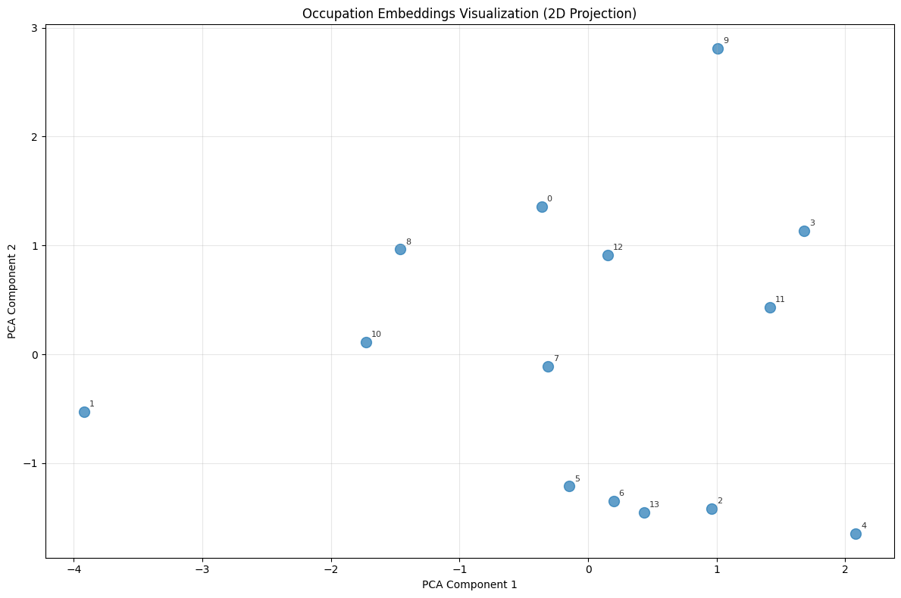
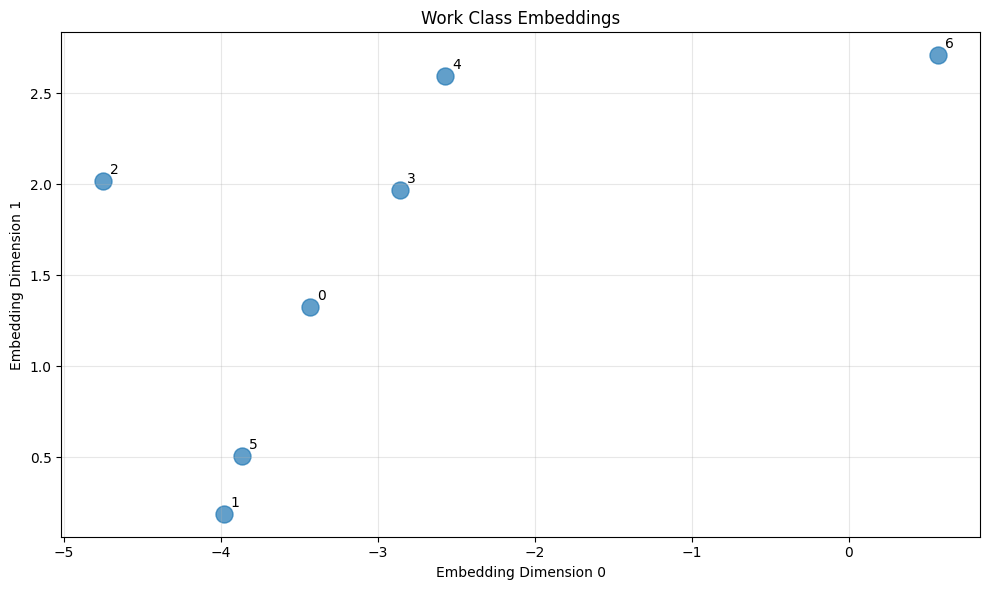

<!DOCTYPE html>


<html lang="en" data-content_root="./" >

  <head>
    <meta charset="utf-8" />
    <meta name="viewport" content="width=device-width, initial-scale=1.0" /><meta name="viewport" content="width=device-width, initial-scale=1" />

    <title>Adult Dataset Example &#8212; Row2Vec Documentation</title>
  
  
  
  <script data-cfasync="false">
    document.documentElement.dataset.mode = localStorage.getItem("mode") || "";
    document.documentElement.dataset.theme = localStorage.getItem("theme") || "";
  </script>
  
  <!-- Loaded before other Sphinx assets -->
  <link href="_static/styles/theme.css?digest=dfe6caa3a7d634c4db9b" rel="stylesheet" />
<link href="_static/styles/bootstrap.css?digest=dfe6caa3a7d634c4db9b" rel="stylesheet" />
<link href="_static/styles/pydata-sphinx-theme.css?digest=dfe6caa3a7d634c4db9b" rel="stylesheet" />

  
  <link href="_static/vendor/fontawesome/6.5.2/css/all.min.css?digest=dfe6caa3a7d634c4db9b" rel="stylesheet" />
  <link rel="preload" as="font" type="font/woff2" crossorigin href="_static/vendor/fontawesome/6.5.2/webfonts/fa-solid-900.woff2" />
<link rel="preload" as="font" type="font/woff2" crossorigin href="_static/vendor/fontawesome/6.5.2/webfonts/fa-brands-400.woff2" />
<link rel="preload" as="font" type="font/woff2" crossorigin href="_static/vendor/fontawesome/6.5.2/webfonts/fa-regular-400.woff2" />

    <link rel="stylesheet" type="text/css" href="_static/pygments.css?v=03e43079" />
    <link rel="stylesheet" type="text/css" href="_static/styles/sphinx-book-theme.css?v=eba8b062" />
    <link rel="stylesheet" type="text/css" href="_static/togglebutton.css?v=13237357" />
    <link rel="stylesheet" type="text/css" href="_static/copybutton.css?v=76b2166b" />
    <link rel="stylesheet" type="text/css" href="_static/mystnb.8ecb98da25f57f5357bf6f572d296f466b2cfe2517ffebfabe82451661e28f02.css" />
    <link rel="stylesheet" type="text/css" href="_static/sphinx-thebe.css?v=4fa983c6" />
    <link rel="stylesheet" type="text/css" href="_static/sphinx-design.min.css?v=95c83b7e" />
  
  <!-- Pre-loaded scripts that we'll load fully later -->
  <link rel="preload" as="script" href="_static/scripts/bootstrap.js?digest=dfe6caa3a7d634c4db9b" />
<link rel="preload" as="script" href="_static/scripts/pydata-sphinx-theme.js?digest=dfe6caa3a7d634c4db9b" />
  <script src="_static/vendor/fontawesome/6.5.2/js/all.min.js?digest=dfe6caa3a7d634c4db9b"></script>

    <script src="_static/documentation_options.js?v=9eb32ce0"></script>
    <script src="_static/doctools.js?v=9a2dae69"></script>
    <script src="_static/sphinx_highlight.js?v=dc90522c"></script>
    <script src="_static/clipboard.min.js?v=a7894cd8"></script>
    <script src="_static/copybutton.js?v=f281be69"></script>
    <script src="_static/scripts/sphinx-book-theme.js?v=887ef09a"></script>
    <script>let toggleHintShow = 'Click to show';</script>
    <script>let toggleHintHide = 'Click to hide';</script>
    <script>let toggleOpenOnPrint = 'true';</script>
    <script src="_static/togglebutton.js?v=4a39c7ea"></script>
    <script>var togglebuttonSelector = '.toggle, .admonition.dropdown';</script>
    <script src="_static/design-tabs.js?v=f930bc37"></script>
    <script>const THEBE_JS_URL = "https://unpkg.com/thebe@0.8.2/lib/index.js"; const thebe_selector = ".thebe,.cell"; const thebe_selector_input = "pre"; const thebe_selector_output = ".output, .cell_output"</script>
    <script async="async" src="_static/sphinx-thebe.js?v=c100c467"></script>
    <script>var togglebuttonSelector = '.toggle, .admonition.dropdown';</script>
    <script>const THEBE_JS_URL = "https://unpkg.com/thebe@0.8.2/lib/index.js"; const thebe_selector = ".thebe,.cell"; const thebe_selector_input = "pre"; const thebe_selector_output = ".output, .cell_output"</script>
    <script>DOCUMENTATION_OPTIONS.pagename = 'adult_example';</script>
    <link rel="canonical" href="/row2vec/adult_example.html" />
    <link rel="index" title="Index" href="genindex.html" />
    <link rel="search" title="Search" href="search.html" />
    <link rel="next" title="Boston Housing Dataset Example" href="housing_example.html" />
    <link rel="prev" title="Titanic Dataset Example" href="titanic_example.html" />
  <meta name="viewport" content="width=device-width, initial-scale=1"/>
  <meta name="docsearch:language" content="en"/>
  </head>
  
  
  <body data-bs-spy="scroll" data-bs-target=".bd-toc-nav" data-offset="180" data-bs-root-margin="0px 0px -60%" data-default-mode="">

  
  
  <div id="pst-skip-link" class="skip-link d-print-none"><a href="#main-content">Skip to main content</a></div>
  
  <div id="pst-scroll-pixel-helper"></div>
  
  <button type="button" class="btn rounded-pill" id="pst-back-to-top">
    <i class="fa-solid fa-arrow-up"></i>Back to top</button>

  
  <input type="checkbox"
          class="sidebar-toggle"
          id="pst-primary-sidebar-checkbox"/>
  <label class="overlay overlay-primary" for="pst-primary-sidebar-checkbox"></label>
  
  <input type="checkbox"
          class="sidebar-toggle"
          id="pst-secondary-sidebar-checkbox"/>
  <label class="overlay overlay-secondary" for="pst-secondary-sidebar-checkbox"></label>
  
  <div class="search-button__wrapper">
    <div class="search-button__overlay"></div>
    <div class="search-button__search-container">
<form class="bd-search d-flex align-items-center"
      action="search.html"
      method="get">
  <i class="fa-solid fa-magnifying-glass"></i>
  <input type="search"
         class="form-control"
         name="q"
         id="search-input"
         placeholder="Search..."
         aria-label="Search..."
         autocomplete="off"
         autocorrect="off"
         autocapitalize="off"
         spellcheck="false"/>
  <span class="search-button__kbd-shortcut"><kbd class="kbd-shortcut__modifier">Ctrl</kbd>+<kbd>K</kbd></span>
</form></div>
  </div>

  <div class="pst-async-banner-revealer d-none">
  <aside id="bd-header-version-warning" class="d-none d-print-none" aria-label="Version warning"></aside>
</div>

  
    <header class="bd-header navbar navbar-expand-lg bd-navbar d-print-none">
    </header>
  

  <div class="bd-container">
    <div class="bd-container__inner bd-page-width">
      
      
      
      <div class="bd-sidebar-primary bd-sidebar">
        

  
  <div class="sidebar-header-items sidebar-primary__section">
    
    
    
    
  </div>
  
    <div class="sidebar-primary-items__start sidebar-primary__section">
        <div class="sidebar-primary-item">

  
    
  

<a class="navbar-brand logo" href="intro.html">
  
  
  
  
  
  
    <p class="title logo__title">Row2Vec Documentation</p>
  
</a></div>
        <div class="sidebar-primary-item">

 <script>
 document.write(`
   <button class="btn search-button-field search-button__button" title="Search" aria-label="Search" data-bs-placement="bottom" data-bs-toggle="tooltip">
    <i class="fa-solid fa-magnifying-glass"></i>
    <span class="search-button__default-text">Search</span>
    <span class="search-button__kbd-shortcut"><kbd class="kbd-shortcut__modifier">Ctrl</kbd>+<kbd class="kbd-shortcut__modifier">K</kbd></span>
   </button>
 `);
 </script></div>
        <div class="sidebar-primary-item"><nav class="bd-links bd-docs-nav" aria-label="Main">
    <div class="bd-toc-item navbar-nav active">
        <ul class="current nav bd-sidenav">
<li class="toctree-l1"><a class="reference internal" href="installation.html">Installation</a></li>
<li class="toctree-l1"><a class="reference internal" href="quickstart.html">Quickstart Guide</a></li>
<li class="toctree-l1"><a class="reference internal" href="titanic_example.html">Titanic Dataset Example</a></li>
<li class="toctree-l1 current active"><a class="current reference internal" href="#">Adult Dataset Example</a></li>
<li class="toctree-l1"><a class="reference internal" href="housing_example.html">Boston Housing Dataset Example</a></li>
<li class="toctree-l1"><a class="reference internal" href="advanced_features.html">Advanced Features</a></li>
<li class="toctree-l1"><a class="reference internal" href="cli_guide.html">Command-Line Interface Guide</a></li>
<li class="toctree-l1"><a class="reference internal" href="theoretical_foundation.html">Theoretical Foundation</a></li>
<li class="toctree-l1"><a class="reference internal" href="api_reference.html">API Reference</a></li>
<li class="toctree-l1"><a class="reference internal" href="changelog.html">Changelog</a></li>
</ul>

    </div>
</nav></div>
    </div>
  
  
  <div class="sidebar-primary-items__end sidebar-primary__section">
  </div>
  
  <div id="rtd-footer-container"></div>


      </div>
      
      <main id="main-content" class="bd-main" role="main">
        
        

<div class="sbt-scroll-pixel-helper"></div>

          <div class="bd-content">
            <div class="bd-article-container">
              
              <div class="bd-header-article d-print-none">
<div class="header-article-items header-article__inner">
  
    <div class="header-article-items__start">
      
        <div class="header-article-item"><button class="sidebar-toggle primary-toggle btn btn-sm" title="Toggle primary sidebar" data-bs-placement="bottom" data-bs-toggle="tooltip">
  <span class="fa-solid fa-bars"></span>
</button></div>
      
    </div>
  
  
    <div class="header-article-items__end">
      
        <div class="header-article-item">

<div class="article-header-buttons">


<div class="dropdown dropdown-download-buttons">
  <button class="btn dropdown-toggle" type="button" data-bs-toggle="dropdown" aria-expanded="false" aria-label="Download this page">
    <i class="fas fa-download"></i>
  </button>
  <ul class="dropdown-menu">
      
      
      
      <li><a href="_sources/adult_example.md" target="_blank"
   class="btn btn-sm btn-download-source-button dropdown-item"
   title="Download source file"
   data-bs-placement="left" data-bs-toggle="tooltip"
>
  

<span class="btn__icon-container">
  <i class="fas fa-file"></i>
  </span>
<span class="btn__text-container">.md</span>
</a>
</li>
      
      
      
      
      <li>
<button onclick="window.print()"
  class="btn btn-sm btn-download-pdf-button dropdown-item"
  title="Print to PDF"
  data-bs-placement="left" data-bs-toggle="tooltip"
>
  

<span class="btn__icon-container">
  <i class="fas fa-file-pdf"></i>
  </span>
<span class="btn__text-container">.pdf</span>
</button>
</li>
      
  </ul>
</div>


<button onclick="toggleFullScreen()"
  class="btn btn-sm btn-fullscreen-button"
  title="Fullscreen mode"
  data-bs-placement="bottom" data-bs-toggle="tooltip"
>
  

<span class="btn__icon-container">
  <i class="fas fa-expand"></i>
  </span>

</button>


<script>
document.write(`
  <button class="btn btn-sm nav-link pst-navbar-icon theme-switch-button" title="light/dark" aria-label="light/dark" data-bs-placement="bottom" data-bs-toggle="tooltip">
    <i class="theme-switch fa-solid fa-sun fa-lg" data-mode="light"></i>
    <i class="theme-switch fa-solid fa-moon fa-lg" data-mode="dark"></i>
    <i class="theme-switch fa-solid fa-circle-half-stroke fa-lg" data-mode="auto"></i>
  </button>
`);
</script>


<script>
document.write(`
  <button class="btn btn-sm pst-navbar-icon search-button search-button__button" title="Search" aria-label="Search" data-bs-placement="bottom" data-bs-toggle="tooltip">
    <i class="fa-solid fa-magnifying-glass fa-lg"></i>
  </button>
`);
</script>
<button class="sidebar-toggle secondary-toggle btn btn-sm" title="Toggle secondary sidebar" data-bs-placement="bottom" data-bs-toggle="tooltip">
    <span class="fa-solid fa-list"></span>
</button>
</div></div>
      
    </div>
  
</div>
</div>
              
              

<div id="jb-print-docs-body" class="onlyprint">
    <h1>Adult Dataset Example</h1>
    <!-- Table of contents -->
    <div id="print-main-content">
        <div id="jb-print-toc">
            
            <div>
                <h2> Contents </h2>
            </div>
            <nav aria-label="Page">
                <ul class="visible nav section-nav flex-column">
<li class="toc-h2 nav-item toc-entry"><a class="reference internal nav-link" href="#load-and-explore-data">Load and Explore Data</a></li>
<li class="toc-h2 nav-item toc-entry"><a class="reference internal nav-link" href="#data-preprocessing">Data Preprocessing</a></li>
<li class="toc-h2 nav-item toc-entry"><a class="reference internal nav-link" href="#unsupervised-embeddings">Unsupervised Embeddings</a></li>
<li class="toc-h2 nav-item toc-entry"><a class="reference internal nav-link" href="#high-cardinality-categorical-embeddings">High-Cardinality Categorical Embeddings</a></li>
<li class="toc-h2 nav-item toc-entry"><a class="reference internal nav-link" href="#analyze-occupation-relationships">Analyze Occupation Relationships</a></li>
<li class="toc-h2 nav-item toc-entry"><a class="reference internal nav-link" href="#work-class-embeddings">Work Class Embeddings</a></li>
<li class="toc-h2 nav-item toc-entry"><a class="reference internal nav-link" href="#compare-methods-on-adult-data">Compare Methods on Adult Data</a></li>
<li class="toc-h2 nav-item toc-entry"><a class="reference internal nav-link" href="#feature-engineering-with-embeddings">Feature Engineering with Embeddings</a></li>
<li class="toc-h2 nav-item toc-entry"><a class="reference internal nav-link" href="#scaling-for-different-ranges">Scaling for Different Ranges</a></li>
<li class="toc-h2 nav-item toc-entry"><a class="reference internal nav-link" href="#production-model">Production Model</a></li>
<li class="toc-h2 nav-item toc-entry"><a class="reference internal nav-link" href="#key-insights">Key Insights</a></li>
<li class="toc-h2 nav-item toc-entry"><a class="reference internal nav-link" href="#next-steps">Next Steps</a></li>
</ul>
            </nav>
        </div>
    </div>
</div>

              
                
<div id="searchbox"></div>
                <article class="bd-article">
                  
  <section class="tex2jax_ignore mathjax_ignore" id="adult-dataset-example">
<h1>Adult Dataset Example<a class="headerlink" href="#adult-dataset-example" title="Link to this heading">#</a></h1>
<p>The Adult dataset demonstrates Row2Vec’s capabilities with high-cardinality categorical features and larger datasets.</p>
<section id="load-and-explore-data">
<h2>Load and Explore Data<a class="headerlink" href="#load-and-explore-data" title="Link to this heading">#</a></h2>
<div class="cell tag_remove-stderr tag_remove-warnings docutils container">
<div class="cell_input docutils container">
<div class="highlight-ipython3 notranslate"><div class="highlight"><pre><span></span><span class="c1"># Import complete suppression first</span>
<span class="n">exec</span><span class="p">(</span><span class="nb">open</span><span class="p">(</span><span class="s1">&#39;suppress_minimal.py&#39;</span><span class="p">)</span><span class="o">.</span><span class="n">read</span><span class="p">())</span>

<span class="kn">import</span><span class="w"> </span><span class="nn">pandas</span><span class="w"> </span><span class="k">as</span><span class="w"> </span><span class="nn">pd</span>
<span class="kn">import</span><span class="w"> </span><span class="nn">numpy</span><span class="w"> </span><span class="k">as</span><span class="w"> </span><span class="nn">np</span>
<span class="kn">from</span><span class="w"> </span><span class="nn">row2vec</span><span class="w"> </span><span class="kn">import</span> <span class="n">learn_embedding</span>
<span class="kn">import</span><span class="w"> </span><span class="nn">os</span>

<span class="c1"># Load Adult dataset</span>
<span class="n">data_path</span> <span class="o">=</span> <span class="n">os</span><span class="o">.</span><span class="n">path</span><span class="o">.</span><span class="n">join</span><span class="p">(</span><span class="s1">&#39;..&#39;</span><span class="p">,</span> <span class="s1">&#39;data&#39;</span><span class="p">,</span> <span class="s1">&#39;adult.csv&#39;</span><span class="p">)</span>
<span class="n">df</span> <span class="o">=</span> <span class="n">pd</span><span class="o">.</span><span class="n">read_csv</span><span class="p">(</span><span class="n">data_path</span><span class="p">)</span>

<span class="nb">print</span><span class="p">(</span><span class="sa">f</span><span class="s2">&quot;Dataset shape: </span><span class="si">{</span><span class="n">df</span><span class="o">.</span><span class="n">shape</span><span class="si">}</span><span class="s2">&quot;</span><span class="p">)</span>
<span class="nb">print</span><span class="p">(</span><span class="sa">f</span><span class="s2">&quot;</span><span class="se">\n</span><span class="s2">Columns: </span><span class="si">{</span><span class="n">df</span><span class="o">.</span><span class="n">columns</span><span class="o">.</span><span class="n">tolist</span><span class="p">()</span><span class="si">}</span><span class="s2">&quot;</span><span class="p">)</span>
</pre></div>
</div>
</div>
<div class="cell_output docutils container">
<div class="output stream highlight-myst-ansi notranslate"><div class="highlight"><pre><span></span>✓ Enhanced minimal suppression active
</pre></div>
</div>
<div class="output stream highlight-myst-ansi notranslate"><div class="highlight"><pre><span></span>Dataset shape: (48842, 15)

Columns: [&#39;age&#39;, &#39;workclass&#39;, &#39;fnlwgt&#39;, &#39;education&#39;, &#39;education-num&#39;, &#39;marital-status&#39;, &#39;occupation&#39;, &#39;relationship&#39;, &#39;race&#39;, &#39;sex&#39;, &#39;capital-gain&#39;, &#39;capital-loss&#39;, &#39;hours-per-week&#39;, &#39;native-country&#39;, &#39;income&#39;]
</pre></div>
</div>
</div>
</div>
<div class="cell tag_remove-stderr tag_remove-warnings docutils container">
<div class="cell_input docutils container">
<div class="highlight-ipython3 notranslate"><div class="highlight"><pre><span></span><span class="c1"># Preview the data</span>
<span class="nb">print</span><span class="p">(</span><span class="s2">&quot;First 5 records:&quot;</span><span class="p">)</span>
<span class="nb">print</span><span class="p">(</span><span class="n">df</span><span class="o">.</span><span class="n">head</span><span class="p">())</span>
</pre></div>
</div>
</div>
<div class="cell_output docutils container">
<div class="output stream highlight-myst-ansi notranslate"><div class="highlight"><pre><span></span>First 5 records:
   age         workclass  fnlwgt  education  education-num  \
0   39         State-gov   77516  Bachelors             13   
1   50  Self-emp-not-inc   83311  Bachelors             13   
2   38           Private  215646    HS-grad              9   
3   53           Private  234721       11th              7   
4   28           Private  338409  Bachelors             13   

       marital-status         occupation   relationship   race     sex  \
0       Never-married       Adm-clerical  Not-in-family  White    Male   
1  Married-civ-spouse    Exec-managerial        Husband  White    Male   
2            Divorced  Handlers-cleaners  Not-in-family  White    Male   
3  Married-civ-spouse  Handlers-cleaners        Husband  Black    Male   
4  Married-civ-spouse     Prof-specialty           Wife  Black  Female   

   capital-gain  capital-loss  hours-per-week native-country income  
0          2174             0              40  United-States  &lt;=50K  
1             0             0              13  United-States  &lt;=50K  
2             0             0              40  United-States  &lt;=50K  
3             0             0              40  United-States  &lt;=50K  
4             0             0              40           Cuba  &lt;=50K  
</pre></div>
</div>
</div>
</div>
<div class="cell tag_remove-stderr tag_remove-warnings docutils container">
<div class="cell_input docutils container">
<div class="highlight-ipython3 notranslate"><div class="highlight"><pre><span></span><span class="c1"># Check for high-cardinality categoricals</span>
<span class="nb">print</span><span class="p">(</span><span class="s2">&quot;Categorical column cardinalities:&quot;</span><span class="p">)</span>
<span class="n">categorical_cols</span> <span class="o">=</span> <span class="n">df</span><span class="o">.</span><span class="n">select_dtypes</span><span class="p">(</span><span class="n">include</span><span class="o">=</span><span class="p">[</span><span class="s1">&#39;object&#39;</span><span class="p">])</span><span class="o">.</span><span class="n">columns</span>
<span class="k">for</span> <span class="n">col</span> <span class="ow">in</span> <span class="n">categorical_cols</span><span class="p">:</span>
    <span class="n">unique_count</span> <span class="o">=</span> <span class="n">df</span><span class="p">[</span><span class="n">col</span><span class="p">]</span><span class="o">.</span><span class="n">nunique</span><span class="p">()</span>
    <span class="nb">print</span><span class="p">(</span><span class="sa">f</span><span class="s2">&quot;  </span><span class="si">{</span><span class="n">col</span><span class="si">}</span><span class="s2">: </span><span class="si">{</span><span class="n">unique_count</span><span class="si">}</span><span class="s2"> unique values&quot;</span><span class="p">)</span>
    <span class="k">if</span> <span class="n">unique_count</span> <span class="o">&lt;=</span> <span class="mi">10</span><span class="p">:</span>  <span class="c1"># Show values for low-cardinality columns</span>
        <span class="nb">print</span><span class="p">(</span><span class="sa">f</span><span class="s2">&quot;    Values: </span><span class="si">{</span><span class="n">df</span><span class="p">[</span><span class="n">col</span><span class="p">]</span><span class="o">.</span><span class="n">unique</span><span class="p">()[:</span><span class="mi">10</span><span class="p">]</span><span class="o">.</span><span class="n">tolist</span><span class="p">()</span><span class="si">}</span><span class="s2">&quot;</span><span class="p">)</span>
</pre></div>
</div>
</div>
<div class="cell_output docutils container">
<div class="output stream highlight-myst-ansi notranslate"><div class="highlight"><pre><span></span>Categorical column cardinalities:
  workclass: 8 unique values
    Values: [&#39;State-gov&#39;, &#39;Self-emp-not-inc&#39;, &#39;Private&#39;, &#39;Federal-gov&#39;, &#39;Local-gov&#39;, nan, &#39;Self-emp-inc&#39;, &#39;Without-pay&#39;, &#39;Never-worked&#39;]
  education: 16 unique values
  marital-status: 7 unique values
    Values: [&#39;Never-married&#39;, &#39;Married-civ-spouse&#39;, &#39;Divorced&#39;, &#39;Married-spouse-absent&#39;, &#39;Separated&#39;, &#39;Married-AF-spouse&#39;, &#39;Widowed&#39;]
  occupation: 14 unique values
  relationship: 6 unique values
    Values: [&#39;Not-in-family&#39;, &#39;Husband&#39;, &#39;Wife&#39;, &#39;Own-child&#39;, &#39;Unmarried&#39;, &#39;Other-relative&#39;]
  race: 5 unique values
    Values: [&#39;White&#39;, &#39;Black&#39;, &#39;Asian-Pac-Islander&#39;, &#39;Amer-Indian-Eskimo&#39;, &#39;Other&#39;]
  sex: 2 unique values
    Values: [&#39;Male&#39;, &#39;Female&#39;]
  native-country: 41 unique values
  income: 2 unique values
    Values: [&#39;&lt;=50K&#39;, &#39;&gt;50K&#39;]
</pre></div>
</div>
</div>
</div>
</section>
<section id="data-preprocessing">
<h2>Data Preprocessing<a class="headerlink" href="#data-preprocessing" title="Link to this heading">#</a></h2>
<div class="cell tag_remove-stderr tag_remove-warnings docutils container">
<div class="cell_input docutils container">
<div class="highlight-ipython3 notranslate"><div class="highlight"><pre><span></span><span class="c1"># Remove columns not useful for general embeddings</span>
<span class="n">cols_to_drop</span> <span class="o">=</span> <span class="p">[</span><span class="s1">&#39;fnlwgt&#39;</span><span class="p">,</span> <span class="s1">&#39;education-num&#39;</span><span class="p">,</span> <span class="s1">&#39;income&#39;</span><span class="p">]</span>  <span class="c1"># fnlwgt is just a weight, education-num duplicates education</span>
<span class="n">df_features</span> <span class="o">=</span> <span class="n">df</span><span class="o">.</span><span class="n">drop</span><span class="p">(</span><span class="n">columns</span><span class="o">=</span><span class="n">cols_to_drop</span><span class="p">)</span>

<span class="nb">print</span><span class="p">(</span><span class="sa">f</span><span class="s2">&quot;Features for embedding: </span><span class="si">{</span><span class="n">df_features</span><span class="o">.</span><span class="n">columns</span><span class="o">.</span><span class="n">tolist</span><span class="p">()</span><span class="si">}</span><span class="s2">&quot;</span><span class="p">)</span>
<span class="nb">print</span><span class="p">(</span><span class="sa">f</span><span class="s2">&quot;Shape: </span><span class="si">{</span><span class="n">df_features</span><span class="o">.</span><span class="n">shape</span><span class="si">}</span><span class="s2">&quot;</span><span class="p">)</span>

<span class="c1"># Check missing values</span>
<span class="n">missing</span> <span class="o">=</span> <span class="n">df_features</span><span class="o">.</span><span class="n">isnull</span><span class="p">()</span><span class="o">.</span><span class="n">sum</span><span class="p">()</span>
<span class="k">if</span> <span class="n">missing</span><span class="o">.</span><span class="n">any</span><span class="p">():</span>
    <span class="nb">print</span><span class="p">(</span><span class="sa">f</span><span class="s2">&quot;</span><span class="se">\n</span><span class="s2">Missing values:&quot;</span><span class="p">)</span>
    <span class="nb">print</span><span class="p">(</span><span class="n">missing</span><span class="p">[</span><span class="n">missing</span> <span class="o">&gt;</span> <span class="mi">0</span><span class="p">])</span>
<span class="k">else</span><span class="p">:</span>
    <span class="nb">print</span><span class="p">(</span><span class="s2">&quot;</span><span class="se">\n</span><span class="s2">No missing values detected&quot;</span><span class="p">)</span>
</pre></div>
</div>
</div>
<div class="cell_output docutils container">
<div class="output stream highlight-myst-ansi notranslate"><div class="highlight"><pre><span></span>Features for embedding: [&#39;age&#39;, &#39;workclass&#39;, &#39;education&#39;, &#39;marital-status&#39;, &#39;occupation&#39;, &#39;relationship&#39;, &#39;race&#39;, &#39;sex&#39;, &#39;capital-gain&#39;, &#39;capital-loss&#39;, &#39;hours-per-week&#39;, &#39;native-country&#39;]
Shape: (48842, 12)

Missing values:
workclass         2799
occupation        2809
native-country     857
dtype: int64
</pre></div>
</div>
</div>
</div>
</section>
<section id="unsupervised-embeddings">
<h2>Unsupervised Embeddings<a class="headerlink" href="#unsupervised-embeddings" title="Link to this heading">#</a></h2>
<p>Generate embeddings for the entire dataset:</p>
<div class="cell tag_remove-stderr tag_remove-warnings docutils container">
<div class="cell_input docutils container">
<div class="highlight-ipython3 notranslate"><div class="highlight"><pre><span></span><span class="c1"># Sample for faster demo (remove sampling for full dataset)</span>
<span class="n">df_sample</span> <span class="o">=</span> <span class="n">df_features</span><span class="o">.</span><span class="n">sample</span><span class="p">(</span><span class="n">n</span><span class="o">=</span><span class="mi">5000</span><span class="p">,</span> <span class="n">random_state</span><span class="o">=</span><span class="mi">42</span><span class="p">)</span>
<span class="nb">print</span><span class="p">(</span><span class="sa">f</span><span class="s2">&quot;Working with sample of </span><span class="si">{</span><span class="nb">len</span><span class="p">(</span><span class="n">df_sample</span><span class="p">)</span><span class="si">}</span><span class="s2"> records&quot;</span><span class="p">)</span>

<span class="c1"># Generate 10D embeddings</span>
<span class="n">embeddings</span> <span class="o">=</span> <span class="n">learn_embedding</span><span class="p">(</span>
    <span class="n">df_sample</span><span class="p">,</span>
    <span class="n">mode</span><span class="o">=</span><span class="s2">&quot;unsupervised&quot;</span><span class="p">,</span>
    <span class="n">embedding_dim</span><span class="o">=</span><span class="mi">10</span><span class="p">,</span>
    <span class="n">max_epochs</span><span class="o">=</span><span class="mi">30</span><span class="p">,</span>
    <span class="n">batch_size</span><span class="o">=</span><span class="mi">128</span><span class="p">,</span>
    <span class="n">dropout_rate</span><span class="o">=</span><span class="mf">0.3</span><span class="p">,</span>
    <span class="n">hidden_units</span><span class="o">=</span><span class="mi">256</span><span class="p">,</span>
    <span class="n">verbose</span><span class="o">=</span><span class="kc">False</span><span class="p">,</span>
    <span class="n">seed</span><span class="o">=</span><span class="mi">42</span>
<span class="p">)</span>

<span class="nb">print</span><span class="p">(</span><span class="sa">f</span><span class="s2">&quot;</span><span class="se">\n</span><span class="s2">Embeddings shape: </span><span class="si">{</span><span class="n">embeddings</span><span class="o">.</span><span class="n">shape</span><span class="si">}</span><span class="s2">&quot;</span><span class="p">)</span>
<span class="nb">print</span><span class="p">(</span><span class="s2">&quot;</span><span class="se">\n</span><span class="s2">Embedding statistics:&quot;</span><span class="p">)</span>
<span class="nb">print</span><span class="p">(</span><span class="n">embeddings</span><span class="o">.</span><span class="n">describe</span><span class="p">()</span><span class="o">.</span><span class="n">round</span><span class="p">(</span><span class="mi">3</span><span class="p">))</span>
</pre></div>
</div>
</div>
<div class="cell_output docutils container">
<div class="output stream highlight-myst-ansi notranslate"><div class="highlight"><pre><span></span>Working with sample of 5000 records
</pre></div>
</div>
<div class="output text_html"><pre style="white-space:pre;overflow-x:auto;line-height:normal;font-family:Menlo,'DejaVu Sans Mono',consolas,'Courier New',monospace"><span style="font-weight: bold">Model: "functional"</span>
</pre>
</div><div class="output text_html"><pre style="white-space:pre;overflow-x:auto;line-height:normal;font-family:Menlo,'DejaVu Sans Mono',consolas,'Courier New',monospace">┏━━━━━━━━━━━━━━━━━━━━━━━━━━━━━━━━━┳━━━━━━━━━━━━━━━━━━━━━━━━┳━━━━━━━━━━━━━━━┓
┃<span style="font-weight: bold"> Layer (type)                    </span>┃<span style="font-weight: bold"> Output Shape           </span>┃<span style="font-weight: bold">       Param # </span>┃
┡━━━━━━━━━━━━━━━━━━━━━━━━━━━━━━━━━╇━━━━━━━━━━━━━━━━━━━━━━━━╇━━━━━━━━━━━━━━━┩
│ input_layer (<span style="color: #0087ff; text-decoration-color: #0087ff">InputLayer</span>)        │ (<span style="color: #00d7ff; text-decoration-color: #00d7ff">None</span>, <span style="color: #00af00; text-decoration-color: #00af00">101</span>)            │             <span style="color: #00af00; text-decoration-color: #00af00">0</span> │
├─────────────────────────────────┼────────────────────────┼───────────────┤
│ dense (<span style="color: #0087ff; text-decoration-color: #0087ff">Dense</span>)                   │ (<span style="color: #00d7ff; text-decoration-color: #00d7ff">None</span>, <span style="color: #00af00; text-decoration-color: #00af00">256</span>)            │        <span style="color: #00af00; text-decoration-color: #00af00">26,112</span> │
├─────────────────────────────────┼────────────────────────┼───────────────┤
│ dropout (<span style="color: #0087ff; text-decoration-color: #0087ff">Dropout</span>)               │ (<span style="color: #00d7ff; text-decoration-color: #00d7ff">None</span>, <span style="color: #00af00; text-decoration-color: #00af00">256</span>)            │             <span style="color: #00af00; text-decoration-color: #00af00">0</span> │
├─────────────────────────────────┼────────────────────────┼───────────────┤
│ embedding (<span style="color: #0087ff; text-decoration-color: #0087ff">Dense</span>)               │ (<span style="color: #00d7ff; text-decoration-color: #00d7ff">None</span>, <span style="color: #00af00; text-decoration-color: #00af00">10</span>)             │         <span style="color: #00af00; text-decoration-color: #00af00">2,570</span> │
├─────────────────────────────────┼────────────────────────┼───────────────┤
│ dense_1 (<span style="color: #0087ff; text-decoration-color: #0087ff">Dense</span>)                 │ (<span style="color: #00d7ff; text-decoration-color: #00d7ff">None</span>, <span style="color: #00af00; text-decoration-color: #00af00">256</span>)            │         <span style="color: #00af00; text-decoration-color: #00af00">2,816</span> │
├─────────────────────────────────┼────────────────────────┼───────────────┤
│ dropout_1 (<span style="color: #0087ff; text-decoration-color: #0087ff">Dropout</span>)             │ (<span style="color: #00d7ff; text-decoration-color: #00d7ff">None</span>, <span style="color: #00af00; text-decoration-color: #00af00">256</span>)            │             <span style="color: #00af00; text-decoration-color: #00af00">0</span> │
├─────────────────────────────────┼────────────────────────┼───────────────┤
│ dense_2 (<span style="color: #0087ff; text-decoration-color: #0087ff">Dense</span>)                 │ (<span style="color: #00d7ff; text-decoration-color: #00d7ff">None</span>, <span style="color: #00af00; text-decoration-color: #00af00">101</span>)            │        <span style="color: #00af00; text-decoration-color: #00af00">25,957</span> │
└─────────────────────────────────┴────────────────────────┴───────────────┘
</pre>
</div><div class="output text_html"><pre style="white-space:pre;overflow-x:auto;line-height:normal;font-family:Menlo,'DejaVu Sans Mono',consolas,'Courier New',monospace"><span style="font-weight: bold"> Total params: </span><span style="color: #00af00; text-decoration-color: #00af00">57,455</span> (224.43 KB)
</pre>
</div><div class="output text_html"><pre style="white-space:pre;overflow-x:auto;line-height:normal;font-family:Menlo,'DejaVu Sans Mono',consolas,'Courier New',monospace"><span style="font-weight: bold"> Trainable params: </span><span style="color: #00af00; text-decoration-color: #00af00">57,455</span> (224.43 KB)
</pre>
</div><div class="output text_html"><pre style="white-space:pre;overflow-x:auto;line-height:normal;font-family:Menlo,'DejaVu Sans Mono',consolas,'Courier New',monospace"><span style="font-weight: bold"> Non-trainable params: </span><span style="color: #00af00; text-decoration-color: #00af00">0</span> (0.00 B)
</pre>
</div><div class="output stream highlight-myst-ansi notranslate"><div class="highlight"><pre><span></span>Embeddings shape: (5000, 10)

Embedding statistics:
       embedding_0  embedding_1  embedding_2  embedding_3  embedding_4  \
count     5000.000     5000.000     5000.000     5000.000     5000.000   
mean         0.038       -0.075       -0.226       -0.087        0.187   
std          0.595        0.610        0.803        0.716        0.645   
min         -1.361       -3.390       -2.058       -1.871       -1.846   
25%         -0.374       -0.437       -0.829       -0.612       -0.213   
50%         -0.015       -0.017       -0.280       -0.049        0.154   
75%          0.403        0.344        0.329        0.428        0.512   
max          2.831        1.868        6.003        1.970        6.058   

       embedding_5  embedding_6  embedding_7  embedding_8  embedding_9  
count     5000.000     5000.000     5000.000     5000.000     5000.000  
mean        -0.028        0.067       -0.085        0.046        0.101  
std          0.751        0.672        0.668        0.586        0.645  
min         -2.666       -3.178       -3.595       -3.724       -1.519  
25%         -0.515       -0.300       -0.448       -0.256       -0.361  
50%         -0.070        0.031       -0.045        0.087        0.028  
75%          0.414        0.452        0.295        0.409        0.478  
max          5.181        3.295        3.443        2.084        4.513  
</pre></div>
</div>
</div>
</div>
</section>
<section id="high-cardinality-categorical-embeddings">
<h2>High-Cardinality Categorical Embeddings<a class="headerlink" href="#high-cardinality-categorical-embeddings" title="Link to this heading">#</a></h2>
<p>The Adult dataset’s ‘occupation’ column has many categories - perfect for target-based embeddings:</p>
<div class="cell tag_remove-stderr tag_remove-warnings docutils container">
<div class="cell_input docutils container">
<div class="highlight-ipython3 notranslate"><div class="highlight"><pre><span></span><span class="c1"># Get occupation counts</span>
<span class="n">occupation_counts</span> <span class="o">=</span> <span class="n">df</span><span class="p">[</span><span class="s1">&#39;occupation&#39;</span><span class="p">]</span><span class="o">.</span><span class="n">value_counts</span><span class="p">()</span>
<span class="nb">print</span><span class="p">(</span><span class="sa">f</span><span class="s2">&quot;Occupation column: </span><span class="si">{</span><span class="nb">len</span><span class="p">(</span><span class="n">occupation_counts</span><span class="p">)</span><span class="si">}</span><span class="s2"> unique values&quot;</span><span class="p">)</span>
<span class="nb">print</span><span class="p">(</span><span class="s2">&quot;</span><span class="se">\n</span><span class="s2">Top 10 occupations:&quot;</span><span class="p">)</span>
<span class="nb">print</span><span class="p">(</span><span class="n">occupation_counts</span><span class="o">.</span><span class="n">head</span><span class="p">(</span><span class="mi">10</span><span class="p">))</span>
</pre></div>
</div>
</div>
<div class="cell_output docutils container">
<div class="output stream highlight-myst-ansi notranslate"><div class="highlight"><pre><span></span>Occupation column: 14 unique values

Top 10 occupations:
occupation
Prof-specialty       6172
Craft-repair         6112
Exec-managerial      6086
Adm-clerical         5611
Sales                5504
Other-service        4923
Machine-op-inspct    3022
Transport-moving     2355
Handlers-cleaners    2072
Farming-fishing      1490
Name: count, dtype: int64
</pre></div>
</div>
</div>
</div>
<div class="cell tag_remove-stderr tag_remove-warnings docutils container">
<div class="cell_input docutils container">
<div class="highlight-ipython3 notranslate"><div class="highlight"><pre><span></span><span class="c1"># Learn embeddings for occupations</span>
<span class="c1"># df_sample already contains occupation column, so we can use it directly</span>
<span class="n">occupation_embeddings</span> <span class="o">=</span> <span class="n">learn_embedding</span><span class="p">(</span>
    <span class="n">df_sample</span><span class="p">,</span>
    <span class="n">mode</span><span class="o">=</span><span class="s2">&quot;target&quot;</span><span class="p">,</span>
    <span class="n">reference_column</span><span class="o">=</span><span class="s2">&quot;occupation&quot;</span><span class="p">,</span>
    <span class="n">embedding_dim</span><span class="o">=</span><span class="mi">3</span><span class="p">,</span>
    <span class="n">max_epochs</span><span class="o">=</span><span class="mi">40</span><span class="p">,</span>
    <span class="n">batch_size</span><span class="o">=</span><span class="mi">128</span><span class="p">,</span>
    <span class="n">verbose</span><span class="o">=</span><span class="kc">False</span><span class="p">,</span>
    <span class="n">seed</span><span class="o">=</span><span class="mi">42</span>
<span class="p">)</span>

<span class="nb">print</span><span class="p">(</span><span class="sa">f</span><span class="s2">&quot;Occupation embeddings shape: </span><span class="si">{</span><span class="n">occupation_embeddings</span><span class="o">.</span><span class="n">shape</span><span class="si">}</span><span class="s2">&quot;</span><span class="p">)</span>
<span class="nb">print</span><span class="p">(</span><span class="s2">&quot;</span><span class="se">\n</span><span class="s2">Occupation embeddings (3D):&quot;</span><span class="p">)</span>
<span class="nb">print</span><span class="p">(</span><span class="n">occupation_embeddings</span><span class="o">.</span><span class="n">round</span><span class="p">(</span><span class="mi">3</span><span class="p">))</span>
</pre></div>
</div>
</div>
<div class="cell_output docutils container">
<div class="output text_html"><pre style="white-space:pre;overflow-x:auto;line-height:normal;font-family:Menlo,'DejaVu Sans Mono',consolas,'Courier New',monospace"><span style="font-weight: bold">Model: "functional_2"</span>
</pre>
</div><div class="output text_html"><pre style="white-space:pre;overflow-x:auto;line-height:normal;font-family:Menlo,'DejaVu Sans Mono',consolas,'Courier New',monospace">┏━━━━━━━━━━━━━━━━━━━━━━━━━━━━━━━━━┳━━━━━━━━━━━━━━━━━━━━━━━━┳━━━━━━━━━━━━━━━┓
┃<span style="font-weight: bold"> Layer (type)                    </span>┃<span style="font-weight: bold"> Output Shape           </span>┃<span style="font-weight: bold">       Param # </span>┃
┡━━━━━━━━━━━━━━━━━━━━━━━━━━━━━━━━━╇━━━━━━━━━━━━━━━━━━━━━━━━╇━━━━━━━━━━━━━━━┩
│ input_layer_1 (<span style="color: #0087ff; text-decoration-color: #0087ff">InputLayer</span>)      │ (<span style="color: #00d7ff; text-decoration-color: #00d7ff">None</span>, <span style="color: #00af00; text-decoration-color: #00af00">87</span>)             │             <span style="color: #00af00; text-decoration-color: #00af00">0</span> │
├─────────────────────────────────┼────────────────────────┼───────────────┤
│ dense_3 (<span style="color: #0087ff; text-decoration-color: #0087ff">Dense</span>)                 │ (<span style="color: #00d7ff; text-decoration-color: #00d7ff">None</span>, <span style="color: #00af00; text-decoration-color: #00af00">128</span>)            │        <span style="color: #00af00; text-decoration-color: #00af00">11,264</span> │
├─────────────────────────────────┼────────────────────────┼───────────────┤
│ dropout_2 (<span style="color: #0087ff; text-decoration-color: #0087ff">Dropout</span>)             │ (<span style="color: #00d7ff; text-decoration-color: #00d7ff">None</span>, <span style="color: #00af00; text-decoration-color: #00af00">128</span>)            │             <span style="color: #00af00; text-decoration-color: #00af00">0</span> │
├─────────────────────────────────┼────────────────────────┼───────────────┤
│ embedding (<span style="color: #0087ff; text-decoration-color: #0087ff">Dense</span>)               │ (<span style="color: #00d7ff; text-decoration-color: #00d7ff">None</span>, <span style="color: #00af00; text-decoration-color: #00af00">3</span>)              │           <span style="color: #00af00; text-decoration-color: #00af00">387</span> │
├─────────────────────────────────┼────────────────────────┼───────────────┤
│ dense_4 (<span style="color: #0087ff; text-decoration-color: #0087ff">Dense</span>)                 │ (<span style="color: #00d7ff; text-decoration-color: #00d7ff">None</span>, <span style="color: #00af00; text-decoration-color: #00af00">14</span>)             │            <span style="color: #00af00; text-decoration-color: #00af00">56</span> │
└─────────────────────────────────┴────────────────────────┴───────────────┘
</pre>
</div><div class="output text_html"><pre style="white-space:pre;overflow-x:auto;line-height:normal;font-family:Menlo,'DejaVu Sans Mono',consolas,'Courier New',monospace"><span style="font-weight: bold"> Total params: </span><span style="color: #00af00; text-decoration-color: #00af00">11,707</span> (45.73 KB)
</pre>
</div><div class="output text_html"><pre style="white-space:pre;overflow-x:auto;line-height:normal;font-family:Menlo,'DejaVu Sans Mono',consolas,'Courier New',monospace"><span style="font-weight: bold"> Trainable params: </span><span style="color: #00af00; text-decoration-color: #00af00">11,707</span> (45.73 KB)
</pre>
</div><div class="output text_html"><pre style="white-space:pre;overflow-x:auto;line-height:normal;font-family:Menlo,'DejaVu Sans Mono',consolas,'Courier New',monospace"><span style="font-weight: bold"> Non-trainable params: </span><span style="color: #00af00; text-decoration-color: #00af00">0</span> (0.00 B)
</pre>
</div><div class="output stream highlight-myst-ansi notranslate"><div class="highlight"><pre><span></span>Occupation embeddings shape: (14, 3)

Occupation embeddings (3D):
          embedding_0  embedding_1  embedding_2
category                                       
0               2.445        0.873        2.140
1              -1.734       -0.412        1.660
2               2.864       -1.616        0.076
3               3.826        0.851        0.230
4               3.530       -1.690       -1.161
5               2.071       -1.488        1.006
6               2.460       -1.688        1.049
7               2.370       -0.589        1.986
8               1.258        0.616        2.206
9               3.094        2.700        0.074
10              0.376        0.111        0.949
11              3.734        0.032        0.748
12              2.563        0.601        1.171
13              2.398       -1.639        0.325
</pre></div>
</div>
</div>
</div>
</section>
<section id="analyze-occupation-relationships">
<h2>Analyze Occupation Relationships<a class="headerlink" href="#analyze-occupation-relationships" title="Link to this heading">#</a></h2>
<div class="cell tag_remove-stderr tag_remove-warnings docutils container">
<div class="cell_input docutils container">
<div class="highlight-ipython3 notranslate"><div class="highlight"><pre><span></span><span class="c1"># Verify occupation_embeddings exists</span>
<span class="k">if</span> <span class="s1">&#39;occupation_embeddings&#39;</span> <span class="ow">not</span> <span class="ow">in</span> <span class="nb">locals</span><span class="p">():</span>
    <span class="nb">print</span><span class="p">(</span><span class="s2">&quot;ERROR: occupation_embeddings not found, recreating...&quot;</span><span class="p">)</span>
    <span class="n">occupation_embeddings</span> <span class="o">=</span> <span class="n">learn_embedding</span><span class="p">(</span>
        <span class="n">df_sample</span><span class="p">,</span>
        <span class="n">mode</span><span class="o">=</span><span class="s2">&quot;target&quot;</span><span class="p">,</span>
        <span class="n">reference_column</span><span class="o">=</span><span class="s2">&quot;occupation&quot;</span><span class="p">,</span>
        <span class="n">embedding_dim</span><span class="o">=</span><span class="mi">3</span><span class="p">,</span>
        <span class="n">max_epochs</span><span class="o">=</span><span class="mi">40</span><span class="p">,</span>
        <span class="n">batch_size</span><span class="o">=</span><span class="mi">128</span><span class="p">,</span>
        <span class="n">verbose</span><span class="o">=</span><span class="kc">False</span><span class="p">,</span>
        <span class="n">seed</span><span class="o">=</span><span class="mi">42</span>
    <span class="p">)</span>

<span class="kn">import</span><span class="w"> </span><span class="nn">matplotlib.pyplot</span><span class="w"> </span><span class="k">as</span><span class="w"> </span><span class="nn">plt</span>
<span class="kn">from</span><span class="w"> </span><span class="nn">sklearn.metrics.pairwise</span><span class="w"> </span><span class="kn">import</span> <span class="n">cosine_similarity</span>

<span class="c1"># Calculate similarity matrix</span>
<span class="n">similarity_matrix</span> <span class="o">=</span> <span class="n">cosine_similarity</span><span class="p">(</span><span class="n">occupation_embeddings</span><span class="o">.</span><span class="n">values</span><span class="p">)</span>
<span class="n">occupations</span> <span class="o">=</span> <span class="n">occupation_embeddings</span><span class="o">.</span><span class="n">index</span><span class="o">.</span><span class="n">tolist</span><span class="p">()</span>

<span class="nb">print</span><span class="p">(</span><span class="s2">&quot;Most similar occupation pairs:&quot;</span><span class="p">)</span>
<span class="nb">print</span><span class="p">(</span><span class="s2">&quot;-&quot;</span> <span class="o">*</span> <span class="mi">40</span><span class="p">)</span>

<span class="c1"># Find most similar pairs</span>
<span class="k">for</span> <span class="n">i</span> <span class="ow">in</span> <span class="nb">range</span><span class="p">(</span><span class="nb">len</span><span class="p">(</span><span class="n">occupations</span><span class="p">)):</span>
    <span class="k">for</span> <span class="n">j</span> <span class="ow">in</span> <span class="nb">range</span><span class="p">(</span><span class="n">i</span><span class="o">+</span><span class="mi">1</span><span class="p">,</span> <span class="nb">len</span><span class="p">(</span><span class="n">occupations</span><span class="p">)):</span>
        <span class="n">similarity</span> <span class="o">=</span> <span class="n">similarity_matrix</span><span class="p">[</span><span class="n">i</span><span class="p">][</span><span class="n">j</span><span class="p">]</span>
        <span class="k">if</span> <span class="n">similarity</span> <span class="o">&gt;</span> <span class="mf">0.8</span><span class="p">:</span>  <span class="c1"># High similarity threshold</span>
            <span class="nb">print</span><span class="p">(</span><span class="sa">f</span><span class="s2">&quot;</span><span class="si">{</span><span class="n">occupations</span><span class="p">[</span><span class="n">i</span><span class="p">]</span><span class="si">}</span><span class="s2"> &lt;-&gt; </span><span class="si">{</span><span class="n">occupations</span><span class="p">[</span><span class="n">j</span><span class="p">]</span><span class="si">}</span><span class="s2">: </span><span class="si">{</span><span class="n">similarity</span><span class="si">:</span><span class="s2">.3f</span><span class="si">}</span><span class="s2">&quot;</span><span class="p">)</span>
</pre></div>
</div>
</div>
<div class="cell_output docutils container">
<div class="output stream highlight-myst-ansi notranslate"><div class="highlight"><pre><span></span>Most similar occupation pairs:
----------------------------------------
0 &lt;-&gt; 3: 0.802
0 &lt;-&gt; 7: 0.900
0 &lt;-&gt; 8: 0.948
0 &lt;-&gt; 10: 0.882
0 &lt;-&gt; 11: 0.840
0 &lt;-&gt; 12: 0.959
2 &lt;-&gt; 4: 0.950
2 &lt;-&gt; 5: 0.933
2 &lt;-&gt; 6: 0.947
2 &lt;-&gt; 11: 0.854
2 &lt;-&gt; 13: 0.992
3 &lt;-&gt; 9: 0.878
3 &lt;-&gt; 11: 0.969
3 &lt;-&gt; 12: 0.936
4 &lt;-&gt; 13: 0.910
5 &lt;-&gt; 6: 0.999
5 &lt;-&gt; 7: 0.902
5 &lt;-&gt; 11: 0.808
5 &lt;-&gt; 13: 0.965
6 &lt;-&gt; 7: 0.895
6 &lt;-&gt; 11: 0.823
6 &lt;-&gt; 13: 0.974
7 &lt;-&gt; 8: 0.851
7 &lt;-&gt; 10: 0.838
7 &lt;-&gt; 11: 0.861
7 &lt;-&gt; 12: 0.887
8 &lt;-&gt; 10: 0.982
8 &lt;-&gt; 12: 0.820
9 &lt;-&gt; 12: 0.815
11 &lt;-&gt; 12: 0.954
11 &lt;-&gt; 13: 0.821
</pre></div>
</div>
</div>
</div>
<div class="cell tag_remove-stderr tag_remove-warnings docutils container">
<div class="cell_input docutils container">
<div class="highlight-ipython3 notranslate"><div class="highlight"><pre><span></span><span class="c1"># Verify occupation_embeddings exists</span>
<span class="k">if</span> <span class="s1">&#39;occupation_embeddings&#39;</span> <span class="ow">not</span> <span class="ow">in</span> <span class="nb">locals</span><span class="p">():</span>
    <span class="nb">print</span><span class="p">(</span><span class="s2">&quot;ERROR: occupation_embeddings not found, recreating...&quot;</span><span class="p">)</span>
    <span class="n">occupation_embeddings</span> <span class="o">=</span> <span class="n">learn_embedding</span><span class="p">(</span>
        <span class="n">df_sample</span><span class="p">,</span>
        <span class="n">mode</span><span class="o">=</span><span class="s2">&quot;target&quot;</span><span class="p">,</span>
        <span class="n">reference_column</span><span class="o">=</span><span class="s2">&quot;occupation&quot;</span><span class="p">,</span>
        <span class="n">embedding_dim</span><span class="o">=</span><span class="mi">3</span><span class="p">,</span>
        <span class="n">max_epochs</span><span class="o">=</span><span class="mi">40</span><span class="p">,</span>
        <span class="n">batch_size</span><span class="o">=</span><span class="mi">128</span><span class="p">,</span>
        <span class="n">verbose</span><span class="o">=</span><span class="kc">False</span><span class="p">,</span>
        <span class="n">seed</span><span class="o">=</span><span class="mi">42</span>
    <span class="p">)</span>
    <span class="n">occupations</span> <span class="o">=</span> <span class="n">occupation_embeddings</span><span class="o">.</span><span class="n">index</span><span class="o">.</span><span class="n">tolist</span><span class="p">()</span>

<span class="c1"># Visualize occupation embeddings in 2D (project from 3D to 2D)</span>
<span class="kn">from</span><span class="w"> </span><span class="nn">sklearn.decomposition</span><span class="w"> </span><span class="kn">import</span> <span class="n">PCA</span>

<span class="n">pca</span> <span class="o">=</span> <span class="n">PCA</span><span class="p">(</span><span class="n">n_components</span><span class="o">=</span><span class="mi">2</span><span class="p">)</span>
<span class="n">occupation_2d</span> <span class="o">=</span> <span class="n">pca</span><span class="o">.</span><span class="n">fit_transform</span><span class="p">(</span><span class="n">occupation_embeddings</span><span class="o">.</span><span class="n">values</span><span class="p">)</span>

<span class="n">plt</span><span class="o">.</span><span class="n">figure</span><span class="p">(</span><span class="n">figsize</span><span class="o">=</span><span class="p">(</span><span class="mi">12</span><span class="p">,</span> <span class="mi">8</span><span class="p">))</span>
<span class="n">plt</span><span class="o">.</span><span class="n">scatter</span><span class="p">(</span><span class="n">occupation_2d</span><span class="p">[:,</span> <span class="mi">0</span><span class="p">],</span> <span class="n">occupation_2d</span><span class="p">[:,</span> <span class="mi">1</span><span class="p">],</span> <span class="n">s</span><span class="o">=</span><span class="mi">100</span><span class="p">,</span> <span class="n">alpha</span><span class="o">=</span><span class="mf">0.7</span><span class="p">)</span>

<span class="c1"># Label each point</span>
<span class="k">for</span> <span class="n">i</span><span class="p">,</span> <span class="n">occupation</span> <span class="ow">in</span> <span class="nb">enumerate</span><span class="p">(</span><span class="n">occupations</span><span class="p">):</span>
    <span class="n">plt</span><span class="o">.</span><span class="n">annotate</span><span class="p">(</span>
        <span class="n">occupation</span><span class="p">,</span>
        <span class="p">(</span><span class="n">occupation_2d</span><span class="p">[</span><span class="n">i</span><span class="p">,</span> <span class="mi">0</span><span class="p">],</span> <span class="n">occupation_2d</span><span class="p">[</span><span class="n">i</span><span class="p">,</span> <span class="mi">1</span><span class="p">]),</span>
        <span class="n">xytext</span><span class="o">=</span><span class="p">(</span><span class="mi">5</span><span class="p">,</span> <span class="mi">5</span><span class="p">),</span>
        <span class="n">textcoords</span><span class="o">=</span><span class="s1">&#39;offset points&#39;</span><span class="p">,</span>
        <span class="n">fontsize</span><span class="o">=</span><span class="mi">8</span><span class="p">,</span>
        <span class="n">alpha</span><span class="o">=</span><span class="mf">0.8</span>
    <span class="p">)</span>

<span class="n">plt</span><span class="o">.</span><span class="n">xlabel</span><span class="p">(</span><span class="s1">&#39;PCA Component 1&#39;</span><span class="p">)</span>
<span class="n">plt</span><span class="o">.</span><span class="n">ylabel</span><span class="p">(</span><span class="s1">&#39;PCA Component 2&#39;</span><span class="p">)</span>
<span class="n">plt</span><span class="o">.</span><span class="n">title</span><span class="p">(</span><span class="s1">&#39;Occupation Embeddings Visualization (2D Projection)&#39;</span><span class="p">)</span>
<span class="n">plt</span><span class="o">.</span><span class="n">grid</span><span class="p">(</span><span class="kc">True</span><span class="p">,</span> <span class="n">alpha</span><span class="o">=</span><span class="mf">0.3</span><span class="p">)</span>
<span class="n">plt</span><span class="o">.</span><span class="n">tight_layout</span><span class="p">()</span>
<span class="n">plt</span><span class="o">.</span><span class="n">show</span><span class="p">()</span>

<span class="nb">print</span><span class="p">(</span><span class="s2">&quot;Notice how similar occupations cluster together!&quot;</span><span class="p">)</span>
</pre></div>
</div>
</div>
<div class="cell_output docutils container">

<div class="output stream highlight-myst-ansi notranslate"><div class="highlight"><pre><span></span>Notice how similar occupations cluster together!
</pre></div>
</div>
</div>
</div>
</section>
<section id="work-class-embeddings">
<h2>Work Class Embeddings<a class="headerlink" href="#work-class-embeddings" title="Link to this heading">#</a></h2>
<div class="cell tag_remove-stderr tag_remove-warnings docutils container">
<div class="cell_input docutils container">
<div class="highlight-ipython3 notranslate"><div class="highlight"><pre><span></span><span class="c1"># Learn embeddings for work class</span>
<span class="c1"># df_sample already contains workclass column, so we can use it directly</span>
<span class="n">workclass_embeddings</span> <span class="o">=</span> <span class="n">learn_embedding</span><span class="p">(</span>
    <span class="n">df_sample</span><span class="p">,</span>
    <span class="n">mode</span><span class="o">=</span><span class="s2">&quot;target&quot;</span><span class="p">,</span>
    <span class="n">reference_column</span><span class="o">=</span><span class="s2">&quot;workclass&quot;</span><span class="p">,</span>
    <span class="n">embedding_dim</span><span class="o">=</span><span class="mi">2</span><span class="p">,</span>
    <span class="n">max_epochs</span><span class="o">=</span><span class="mi">30</span><span class="p">,</span>
    <span class="n">verbose</span><span class="o">=</span><span class="kc">False</span><span class="p">,</span>
    <span class="n">seed</span><span class="o">=</span><span class="mi">42</span>
<span class="p">)</span>

<span class="nb">print</span><span class="p">(</span><span class="sa">f</span><span class="s2">&quot;Work class embeddings shape: </span><span class="si">{</span><span class="n">workclass_embeddings</span><span class="o">.</span><span class="n">shape</span><span class="si">}</span><span class="s2">&quot;</span><span class="p">)</span>
<span class="nb">print</span><span class="p">(</span><span class="s2">&quot;</span><span class="se">\n</span><span class="s2">Work class embeddings:&quot;</span><span class="p">)</span>
<span class="nb">print</span><span class="p">(</span><span class="n">workclass_embeddings</span><span class="o">.</span><span class="n">round</span><span class="p">(</span><span class="mi">3</span><span class="p">))</span>
</pre></div>
</div>
</div>
<div class="cell_output docutils container">
<div class="output text_html"><pre style="white-space:pre;overflow-x:auto;line-height:normal;font-family:Menlo,'DejaVu Sans Mono',consolas,'Courier New',monospace"><span style="font-weight: bold">Model: "functional_4"</span>
</pre>
</div><div class="output text_html"><pre style="white-space:pre;overflow-x:auto;line-height:normal;font-family:Menlo,'DejaVu Sans Mono',consolas,'Courier New',monospace">┏━━━━━━━━━━━━━━━━━━━━━━━━━━━━━━━━━┳━━━━━━━━━━━━━━━━━━━━━━━━┳━━━━━━━━━━━━━━━┓
┃<span style="font-weight: bold"> Layer (type)                    </span>┃<span style="font-weight: bold"> Output Shape           </span>┃<span style="font-weight: bold">       Param # </span>┃
┡━━━━━━━━━━━━━━━━━━━━━━━━━━━━━━━━━╇━━━━━━━━━━━━━━━━━━━━━━━━╇━━━━━━━━━━━━━━━┩
│ input_layer_2 (<span style="color: #0087ff; text-decoration-color: #0087ff">InputLayer</span>)      │ (<span style="color: #00d7ff; text-decoration-color: #00d7ff">None</span>, <span style="color: #00af00; text-decoration-color: #00af00">94</span>)             │             <span style="color: #00af00; text-decoration-color: #00af00">0</span> │
├─────────────────────────────────┼────────────────────────┼───────────────┤
│ dense_5 (<span style="color: #0087ff; text-decoration-color: #0087ff">Dense</span>)                 │ (<span style="color: #00d7ff; text-decoration-color: #00d7ff">None</span>, <span style="color: #00af00; text-decoration-color: #00af00">128</span>)            │        <span style="color: #00af00; text-decoration-color: #00af00">12,160</span> │
├─────────────────────────────────┼────────────────────────┼───────────────┤
│ dropout_3 (<span style="color: #0087ff; text-decoration-color: #0087ff">Dropout</span>)             │ (<span style="color: #00d7ff; text-decoration-color: #00d7ff">None</span>, <span style="color: #00af00; text-decoration-color: #00af00">128</span>)            │             <span style="color: #00af00; text-decoration-color: #00af00">0</span> │
├─────────────────────────────────┼────────────────────────┼───────────────┤
│ embedding (<span style="color: #0087ff; text-decoration-color: #0087ff">Dense</span>)               │ (<span style="color: #00d7ff; text-decoration-color: #00d7ff">None</span>, <span style="color: #00af00; text-decoration-color: #00af00">2</span>)              │           <span style="color: #00af00; text-decoration-color: #00af00">258</span> │
├─────────────────────────────────┼────────────────────────┼───────────────┤
│ dense_6 (<span style="color: #0087ff; text-decoration-color: #0087ff">Dense</span>)                 │ (<span style="color: #00d7ff; text-decoration-color: #00d7ff">None</span>, <span style="color: #00af00; text-decoration-color: #00af00">7</span>)              │            <span style="color: #00af00; text-decoration-color: #00af00">21</span> │
└─────────────────────────────────┴────────────────────────┴───────────────┘
</pre>
</div><div class="output text_html"><pre style="white-space:pre;overflow-x:auto;line-height:normal;font-family:Menlo,'DejaVu Sans Mono',consolas,'Courier New',monospace"><span style="font-weight: bold"> Total params: </span><span style="color: #00af00; text-decoration-color: #00af00">12,439</span> (48.59 KB)
</pre>
</div><div class="output text_html"><pre style="white-space:pre;overflow-x:auto;line-height:normal;font-family:Menlo,'DejaVu Sans Mono',consolas,'Courier New',monospace"><span style="font-weight: bold"> Trainable params: </span><span style="color: #00af00; text-decoration-color: #00af00">12,439</span> (48.59 KB)
</pre>
</div><div class="output text_html"><pre style="white-space:pre;overflow-x:auto;line-height:normal;font-family:Menlo,'DejaVu Sans Mono',consolas,'Courier New',monospace"><span style="font-weight: bold"> Non-trainable params: </span><span style="color: #00af00; text-decoration-color: #00af00">0</span> (0.00 B)
</pre>
</div><div class="output stream highlight-myst-ansi notranslate"><div class="highlight"><pre><span></span>Work class embeddings shape: (7, 2)

Work class embeddings:
          embedding_0  embedding_1
category                          
0              -3.429        1.326
1              -3.981        0.188
2              -4.749        2.017
3              -2.858        1.971
4              -2.570        2.595
5              -3.861        0.506
6               0.569        2.710
</pre></div>
</div>
</div>
</div>
<div class="cell tag_remove-stderr tag_remove-warnings docutils container">
<div class="cell_input docutils container">
<div class="highlight-ipython3 notranslate"><div class="highlight"><pre><span></span><span class="c1"># Verify workclass_embeddings exists</span>
<span class="k">if</span> <span class="s1">&#39;workclass_embeddings&#39;</span> <span class="ow">not</span> <span class="ow">in</span> <span class="nb">locals</span><span class="p">():</span>
    <span class="nb">print</span><span class="p">(</span><span class="s2">&quot;ERROR: workclass_embeddings not found, recreating...&quot;</span><span class="p">)</span>
    <span class="n">workclass_embeddings</span> <span class="o">=</span> <span class="n">learn_embedding</span><span class="p">(</span>
        <span class="n">df_sample</span><span class="p">,</span>
        <span class="n">mode</span><span class="o">=</span><span class="s2">&quot;target&quot;</span><span class="p">,</span>
        <span class="n">reference_column</span><span class="o">=</span><span class="s2">&quot;workclass&quot;</span><span class="p">,</span>
        <span class="n">embedding_dim</span><span class="o">=</span><span class="mi">2</span><span class="p">,</span>
        <span class="n">max_epochs</span><span class="o">=</span><span class="mi">30</span><span class="p">,</span>
        <span class="n">verbose</span><span class="o">=</span><span class="kc">False</span><span class="p">,</span>
        <span class="n">seed</span><span class="o">=</span><span class="mi">42</span>
    <span class="p">)</span>

<span class="c1"># Visualize work class embeddings</span>
<span class="n">plt</span><span class="o">.</span><span class="n">figure</span><span class="p">(</span><span class="n">figsize</span><span class="o">=</span><span class="p">(</span><span class="mi">10</span><span class="p">,</span> <span class="mi">6</span><span class="p">))</span>
<span class="n">plt</span><span class="o">.</span><span class="n">scatter</span><span class="p">(</span><span class="n">workclass_embeddings</span><span class="o">.</span><span class="n">iloc</span><span class="p">[:,</span> <span class="mi">0</span><span class="p">],</span> <span class="n">workclass_embeddings</span><span class="o">.</span><span class="n">iloc</span><span class="p">[:,</span> <span class="mi">1</span><span class="p">],</span> <span class="n">s</span><span class="o">=</span><span class="mi">150</span><span class="p">,</span> <span class="n">alpha</span><span class="o">=</span><span class="mf">0.7</span><span class="p">)</span>

<span class="k">for</span> <span class="n">i</span><span class="p">,</span> <span class="n">workclass</span> <span class="ow">in</span> <span class="nb">enumerate</span><span class="p">(</span><span class="n">workclass_embeddings</span><span class="o">.</span><span class="n">index</span><span class="p">):</span>
    <span class="n">plt</span><span class="o">.</span><span class="n">annotate</span><span class="p">(</span>
        <span class="n">workclass</span><span class="p">,</span>
        <span class="p">(</span><span class="n">workclass_embeddings</span><span class="o">.</span><span class="n">iloc</span><span class="p">[</span><span class="n">i</span><span class="p">,</span> <span class="mi">0</span><span class="p">],</span> <span class="n">workclass_embeddings</span><span class="o">.</span><span class="n">iloc</span><span class="p">[</span><span class="n">i</span><span class="p">,</span> <span class="mi">1</span><span class="p">]),</span>
        <span class="n">xytext</span><span class="o">=</span><span class="p">(</span><span class="mi">5</span><span class="p">,</span> <span class="mi">5</span><span class="p">),</span>
        <span class="n">textcoords</span><span class="o">=</span><span class="s1">&#39;offset points&#39;</span><span class="p">,</span>
        <span class="n">fontsize</span><span class="o">=</span><span class="mi">10</span>
    <span class="p">)</span>

<span class="n">plt</span><span class="o">.</span><span class="n">xlabel</span><span class="p">(</span><span class="s1">&#39;Embedding Dimension 0&#39;</span><span class="p">)</span>
<span class="n">plt</span><span class="o">.</span><span class="n">ylabel</span><span class="p">(</span><span class="s1">&#39;Embedding Dimension 1&#39;</span><span class="p">)</span>
<span class="n">plt</span><span class="o">.</span><span class="n">title</span><span class="p">(</span><span class="s1">&#39;Work Class Embeddings&#39;</span><span class="p">)</span>
<span class="n">plt</span><span class="o">.</span><span class="n">grid</span><span class="p">(</span><span class="kc">True</span><span class="p">,</span> <span class="n">alpha</span><span class="o">=</span><span class="mf">0.3</span><span class="p">)</span>
<span class="n">plt</span><span class="o">.</span><span class="n">tight_layout</span><span class="p">()</span>
<span class="n">plt</span><span class="o">.</span><span class="n">show</span><span class="p">()</span>
</pre></div>
</div>
</div>
<div class="cell_output docutils container">

</div>
</div>
</section>
<section id="compare-methods-on-adult-data">
<h2>Compare Methods on Adult Data<a class="headerlink" href="#compare-methods-on-adult-data" title="Link to this heading">#</a></h2>
<div class="cell tag_remove-stderr tag_remove-warnings docutils container">
<div class="cell_input docutils container">
<div class="highlight-ipython3 notranslate"><div class="highlight"><pre><span></span><span class="kn">import</span><span class="w"> </span><span class="nn">time</span>

<span class="c1"># Compare different methods</span>
<span class="n">methods</span> <span class="o">=</span> <span class="p">{</span>
    <span class="s2">&quot;Neural&quot;</span><span class="p">:</span> <span class="p">{</span><span class="s2">&quot;mode&quot;</span><span class="p">:</span> <span class="s2">&quot;unsupervised&quot;</span><span class="p">,</span> <span class="s2">&quot;max_epochs&quot;</span><span class="p">:</span> <span class="mi">20</span><span class="p">},</span>
    <span class="s2">&quot;PCA&quot;</span><span class="p">:</span> <span class="p">{</span><span class="s2">&quot;mode&quot;</span><span class="p">:</span> <span class="s2">&quot;pca&quot;</span><span class="p">},</span>
    <span class="s2">&quot;t-SNE&quot;</span><span class="p">:</span> <span class="p">{</span><span class="s2">&quot;mode&quot;</span><span class="p">:</span> <span class="s2">&quot;tsne&quot;</span><span class="p">,</span> <span class="s2">&quot;perplexity&quot;</span><span class="p">:</span> <span class="mi">50</span><span class="p">}</span>
<span class="p">}</span>

<span class="c1"># Use smaller sample for t-SNE (it&#39;s slow)</span>
<span class="n">small_sample</span> <span class="o">=</span> <span class="n">df_features</span><span class="o">.</span><span class="n">sample</span><span class="p">(</span><span class="n">n</span><span class="o">=</span><span class="mi">1000</span><span class="p">,</span> <span class="n">random_state</span><span class="o">=</span><span class="mi">42</span><span class="p">)</span>

<span class="n">results</span> <span class="o">=</span> <span class="p">{}</span>
<span class="k">for</span> <span class="n">name</span><span class="p">,</span> <span class="n">params</span> <span class="ow">in</span> <span class="n">methods</span><span class="o">.</span><span class="n">items</span><span class="p">():</span>
    <span class="nb">print</span><span class="p">(</span><span class="sa">f</span><span class="s2">&quot;Running </span><span class="si">{</span><span class="n">name</span><span class="si">}</span><span class="s2">...&quot;</span><span class="p">)</span>
    <span class="n">start</span> <span class="o">=</span> <span class="n">time</span><span class="o">.</span><span class="n">time</span><span class="p">()</span>

    <span class="n">emb</span> <span class="o">=</span> <span class="n">learn_embedding</span><span class="p">(</span>
        <span class="n">small_sample</span><span class="p">,</span>
        <span class="n">embedding_dim</span><span class="o">=</span><span class="mi">2</span><span class="p">,</span>
        <span class="n">verbose</span><span class="o">=</span><span class="kc">False</span><span class="p">,</span>
        <span class="n">seed</span><span class="o">=</span><span class="mi">42</span><span class="p">,</span>
        <span class="o">**</span><span class="n">params</span>
    <span class="p">)</span>

    <span class="n">elapsed</span> <span class="o">=</span> <span class="n">time</span><span class="o">.</span><span class="n">time</span><span class="p">()</span> <span class="o">-</span> <span class="n">start</span>
    <span class="n">results</span><span class="p">[</span><span class="n">name</span><span class="p">]</span> <span class="o">=</span> <span class="p">{</span>
        <span class="s2">&quot;time&quot;</span><span class="p">:</span> <span class="n">elapsed</span><span class="p">,</span>
        <span class="s2">&quot;shape&quot;</span><span class="p">:</span> <span class="n">emb</span><span class="o">.</span><span class="n">shape</span><span class="p">,</span>
        <span class="s2">&quot;mean&quot;</span><span class="p">:</span> <span class="n">emb</span><span class="o">.</span><span class="n">mean</span><span class="p">()</span><span class="o">.</span><span class="n">mean</span><span class="p">(),</span>
        <span class="s2">&quot;std&quot;</span><span class="p">:</span> <span class="n">emb</span><span class="o">.</span><span class="n">std</span><span class="p">()</span><span class="o">.</span><span class="n">mean</span><span class="p">()</span>
    <span class="p">}</span>

<span class="nb">print</span><span class="p">(</span><span class="s2">&quot;</span><span class="se">\n</span><span class="s2">Method comparison results:&quot;</span><span class="p">)</span>
<span class="nb">print</span><span class="p">(</span><span class="s2">&quot;-&quot;</span> <span class="o">*</span> <span class="mi">60</span><span class="p">)</span>
<span class="k">for</span> <span class="n">method</span><span class="p">,</span> <span class="n">stats</span> <span class="ow">in</span> <span class="n">results</span><span class="o">.</span><span class="n">items</span><span class="p">():</span>
    <span class="nb">print</span><span class="p">(</span><span class="sa">f</span><span class="s2">&quot;</span><span class="si">{</span><span class="n">method</span><span class="si">:</span><span class="s2">8</span><span class="si">}</span><span class="s2"> | Time: </span><span class="si">{</span><span class="n">stats</span><span class="p">[</span><span class="s1">&#39;time&#39;</span><span class="p">]</span><span class="si">:</span><span class="s2">6.2f</span><span class="si">}</span><span class="s2">s | Mean: </span><span class="si">{</span><span class="n">stats</span><span class="p">[</span><span class="s1">&#39;mean&#39;</span><span class="p">]</span><span class="si">:</span><span class="s2">7.3f</span><span class="si">}</span><span class="s2"> | Std: </span><span class="si">{</span><span class="n">stats</span><span class="p">[</span><span class="s1">&#39;std&#39;</span><span class="p">]</span><span class="si">:</span><span class="s2">6.3f</span><span class="si">}</span><span class="s2">&quot;</span><span class="p">)</span>
</pre></div>
</div>
</div>
<div class="cell_output docutils container">
<div class="output stream highlight-myst-ansi notranslate"><div class="highlight"><pre><span></span>Running Neural...
</pre></div>
</div>
<div class="output text_html"><pre style="white-space:pre;overflow-x:auto;line-height:normal;font-family:Menlo,'DejaVu Sans Mono',consolas,'Courier New',monospace"><span style="font-weight: bold">Model: "functional_6"</span>
</pre>
</div><div class="output text_html"><pre style="white-space:pre;overflow-x:auto;line-height:normal;font-family:Menlo,'DejaVu Sans Mono',consolas,'Courier New',monospace">┏━━━━━━━━━━━━━━━━━━━━━━━━━━━━━━━━━┳━━━━━━━━━━━━━━━━━━━━━━━━┳━━━━━━━━━━━━━━━┓
┃<span style="font-weight: bold"> Layer (type)                    </span>┃<span style="font-weight: bold"> Output Shape           </span>┃<span style="font-weight: bold">       Param # </span>┃
┡━━━━━━━━━━━━━━━━━━━━━━━━━━━━━━━━━╇━━━━━━━━━━━━━━━━━━━━━━━━╇━━━━━━━━━━━━━━━┩
│ input_layer_3 (<span style="color: #0087ff; text-decoration-color: #0087ff">InputLayer</span>)      │ (<span style="color: #00d7ff; text-decoration-color: #00d7ff">None</span>, <span style="color: #00af00; text-decoration-color: #00af00">87</span>)             │             <span style="color: #00af00; text-decoration-color: #00af00">0</span> │
├─────────────────────────────────┼────────────────────────┼───────────────┤
│ dense_7 (<span style="color: #0087ff; text-decoration-color: #0087ff">Dense</span>)                 │ (<span style="color: #00d7ff; text-decoration-color: #00d7ff">None</span>, <span style="color: #00af00; text-decoration-color: #00af00">128</span>)            │        <span style="color: #00af00; text-decoration-color: #00af00">11,264</span> │
├─────────────────────────────────┼────────────────────────┼───────────────┤
│ dropout_4 (<span style="color: #0087ff; text-decoration-color: #0087ff">Dropout</span>)             │ (<span style="color: #00d7ff; text-decoration-color: #00d7ff">None</span>, <span style="color: #00af00; text-decoration-color: #00af00">128</span>)            │             <span style="color: #00af00; text-decoration-color: #00af00">0</span> │
├─────────────────────────────────┼────────────────────────┼───────────────┤
│ embedding (<span style="color: #0087ff; text-decoration-color: #0087ff">Dense</span>)               │ (<span style="color: #00d7ff; text-decoration-color: #00d7ff">None</span>, <span style="color: #00af00; text-decoration-color: #00af00">2</span>)              │           <span style="color: #00af00; text-decoration-color: #00af00">258</span> │
├─────────────────────────────────┼────────────────────────┼───────────────┤
│ dense_8 (<span style="color: #0087ff; text-decoration-color: #0087ff">Dense</span>)                 │ (<span style="color: #00d7ff; text-decoration-color: #00d7ff">None</span>, <span style="color: #00af00; text-decoration-color: #00af00">128</span>)            │           <span style="color: #00af00; text-decoration-color: #00af00">384</span> │
├─────────────────────────────────┼────────────────────────┼───────────────┤
│ dropout_5 (<span style="color: #0087ff; text-decoration-color: #0087ff">Dropout</span>)             │ (<span style="color: #00d7ff; text-decoration-color: #00d7ff">None</span>, <span style="color: #00af00; text-decoration-color: #00af00">128</span>)            │             <span style="color: #00af00; text-decoration-color: #00af00">0</span> │
├─────────────────────────────────┼────────────────────────┼───────────────┤
│ dense_9 (<span style="color: #0087ff; text-decoration-color: #0087ff">Dense</span>)                 │ (<span style="color: #00d7ff; text-decoration-color: #00d7ff">None</span>, <span style="color: #00af00; text-decoration-color: #00af00">87</span>)             │        <span style="color: #00af00; text-decoration-color: #00af00">11,223</span> │
└─────────────────────────────────┴────────────────────────┴───────────────┘
</pre>
</div><div class="output text_html"><pre style="white-space:pre;overflow-x:auto;line-height:normal;font-family:Menlo,'DejaVu Sans Mono',consolas,'Courier New',monospace"><span style="font-weight: bold"> Total params: </span><span style="color: #00af00; text-decoration-color: #00af00">23,129</span> (90.35 KB)
</pre>
</div><div class="output text_html"><pre style="white-space:pre;overflow-x:auto;line-height:normal;font-family:Menlo,'DejaVu Sans Mono',consolas,'Courier New',monospace"><span style="font-weight: bold"> Trainable params: </span><span style="color: #00af00; text-decoration-color: #00af00">23,129</span> (90.35 KB)
</pre>
</div><div class="output text_html"><pre style="white-space:pre;overflow-x:auto;line-height:normal;font-family:Menlo,'DejaVu Sans Mono',consolas,'Courier New',monospace"><span style="font-weight: bold"> Non-trainable params: </span><span style="color: #00af00; text-decoration-color: #00af00">0</span> (0.00 B)
</pre>
</div><div class="output stream highlight-myst-ansi notranslate"><div class="highlight"><pre><span></span>Running PCA...
Running t-SNE...
</pre></div>
</div>
<div class="output stream highlight-myst-ansi notranslate"><div class="highlight"><pre><span></span>Method comparison results:
------------------------------------------------------------
Neural   | Time:   2.66s | Mean:  -0.018 | Std:  0.853
PCA      | Time:   0.06s | Mean:   0.000 | Std:  1.104
t-SNE    | Time:   5.01s | Mean:  -0.162 | Std: 15.505
</pre></div>
</div>
</div>
</div>
</section>
<section id="feature-engineering-with-embeddings">
<h2>Feature Engineering with Embeddings<a class="headerlink" href="#feature-engineering-with-embeddings" title="Link to this heading">#</a></h2>
<p>Use embeddings as features for income prediction:</p>
<div class="cell tag_remove-stderr tag_remove-warnings docutils container">
<div class="cell_input docutils container">
<div class="highlight-ipython3 notranslate"><div class="highlight"><pre><span></span><span class="kn">from</span><span class="w"> </span><span class="nn">sklearn.model_selection</span><span class="w"> </span><span class="kn">import</span> <span class="n">train_test_split</span>
<span class="kn">from</span><span class="w"> </span><span class="nn">sklearn.ensemble</span><span class="w"> </span><span class="kn">import</span> <span class="n">RandomForestClassifier</span>
<span class="kn">from</span><span class="w"> </span><span class="nn">sklearn.metrics</span><span class="w"> </span><span class="kn">import</span> <span class="n">accuracy_score</span><span class="p">,</span> <span class="n">classification_report</span>

<span class="c1"># Prepare target variable</span>
<span class="n">income_binary</span> <span class="o">=</span> <span class="p">(</span><span class="n">df</span><span class="o">.</span><span class="n">loc</span><span class="p">[</span><span class="n">df_sample</span><span class="o">.</span><span class="n">index</span><span class="p">,</span> <span class="s1">&#39;income&#39;</span><span class="p">]</span> <span class="o">==</span> <span class="s1">&#39;&gt;50K&#39;</span><span class="p">)</span><span class="o">.</span><span class="n">astype</span><span class="p">(</span><span class="nb">int</span><span class="p">)</span>

<span class="nb">print</span><span class="p">(</span><span class="sa">f</span><span class="s2">&quot;Income distribution in sample:&quot;</span><span class="p">)</span>
<span class="nb">print</span><span class="p">(</span><span class="sa">f</span><span class="s2">&quot;&lt;=50K: </span><span class="si">{</span><span class="p">(</span><span class="n">income_binary</span><span class="w"> </span><span class="o">==</span><span class="w"> </span><span class="mi">0</span><span class="p">)</span><span class="o">.</span><span class="n">sum</span><span class="p">()</span><span class="si">}</span><span class="s2"> (</span><span class="si">{</span><span class="p">(</span><span class="n">income_binary</span><span class="w"> </span><span class="o">==</span><span class="w"> </span><span class="mi">0</span><span class="p">)</span><span class="o">.</span><span class="n">mean</span><span class="p">()</span><span class="si">:</span><span class="s2">.1%</span><span class="si">}</span><span class="s2">)&quot;</span><span class="p">)</span>
<span class="nb">print</span><span class="p">(</span><span class="sa">f</span><span class="s2">&quot;&gt;50K:  </span><span class="si">{</span><span class="p">(</span><span class="n">income_binary</span><span class="w"> </span><span class="o">==</span><span class="w"> </span><span class="mi">1</span><span class="p">)</span><span class="o">.</span><span class="n">sum</span><span class="p">()</span><span class="si">}</span><span class="s2"> (</span><span class="si">{</span><span class="p">(</span><span class="n">income_binary</span><span class="w"> </span><span class="o">==</span><span class="w"> </span><span class="mi">1</span><span class="p">)</span><span class="o">.</span><span class="n">mean</span><span class="p">()</span><span class="si">:</span><span class="s2">.1%</span><span class="si">}</span><span class="s2">)&quot;</span><span class="p">)</span>

<span class="c1"># Use embeddings as features</span>
<span class="n">X</span> <span class="o">=</span> <span class="n">embeddings</span>
<span class="n">y</span> <span class="o">=</span> <span class="n">income_binary</span>

<span class="c1"># Split data</span>
<span class="n">X_train</span><span class="p">,</span> <span class="n">X_test</span><span class="p">,</span> <span class="n">y_train</span><span class="p">,</span> <span class="n">y_test</span> <span class="o">=</span> <span class="n">train_test_split</span><span class="p">(</span>
    <span class="n">X</span><span class="p">,</span> <span class="n">y</span><span class="p">,</span> <span class="n">test_size</span><span class="o">=</span><span class="mf">0.2</span><span class="p">,</span> <span class="n">random_state</span><span class="o">=</span><span class="mi">42</span><span class="p">,</span> <span class="n">stratify</span><span class="o">=</span><span class="n">y</span>
<span class="p">)</span>

<span class="c1"># Train classifier</span>
<span class="n">clf</span> <span class="o">=</span> <span class="n">RandomForestClassifier</span><span class="p">(</span><span class="n">n_estimators</span><span class="o">=</span><span class="mi">100</span><span class="p">,</span> <span class="n">random_state</span><span class="o">=</span><span class="mi">42</span><span class="p">)</span>
<span class="n">clf</span><span class="o">.</span><span class="n">fit</span><span class="p">(</span><span class="n">X_train</span><span class="p">,</span> <span class="n">y_train</span><span class="p">)</span>

<span class="c1"># Evaluate</span>
<span class="n">y_pred</span> <span class="o">=</span> <span class="n">clf</span><span class="o">.</span><span class="n">predict</span><span class="p">(</span><span class="n">X_test</span><span class="p">)</span>
<span class="n">accuracy</span> <span class="o">=</span> <span class="n">accuracy_score</span><span class="p">(</span><span class="n">y_test</span><span class="p">,</span> <span class="n">y_pred</span><span class="p">)</span>

<span class="nb">print</span><span class="p">(</span><span class="sa">f</span><span class="s2">&quot;</span><span class="se">\n</span><span class="s2">Income prediction using embeddings:&quot;</span><span class="p">)</span>
<span class="nb">print</span><span class="p">(</span><span class="sa">f</span><span class="s2">&quot;Accuracy: </span><span class="si">{</span><span class="n">accuracy</span><span class="si">:</span><span class="s2">.3f</span><span class="si">}</span><span class="s2">&quot;</span><span class="p">)</span>
<span class="nb">print</span><span class="p">(</span><span class="s2">&quot;</span><span class="se">\n</span><span class="s2">Classification Report:&quot;</span><span class="p">)</span>
<span class="nb">print</span><span class="p">(</span><span class="n">classification_report</span><span class="p">(</span><span class="n">y_test</span><span class="p">,</span> <span class="n">y_pred</span><span class="p">,</span> <span class="n">target_names</span><span class="o">=</span><span class="p">[</span><span class="s1">&#39;&lt;=50K&#39;</span><span class="p">,</span> <span class="s1">&#39;&gt;50K&#39;</span><span class="p">]))</span>
</pre></div>
</div>
</div>
<div class="cell_output docutils container">
<div class="output stream highlight-myst-ansi notranslate"><div class="highlight"><pre><span></span>Income distribution in sample:
&lt;=50K: 3819 (76.4%)
&gt;50K:  1181 (23.6%)
</pre></div>
</div>
<div class="output stream highlight-myst-ansi notranslate"><div class="highlight"><pre><span></span>Income prediction using embeddings:
Accuracy: 0.812

Classification Report:
              precision    recall  f1-score   support

       &lt;=50K       0.85      0.91      0.88       764
        &gt;50K       0.63      0.49      0.55       236

    accuracy                           0.81      1000
   macro avg       0.74      0.70      0.72      1000
weighted avg       0.80      0.81      0.80      1000
</pre></div>
</div>
</div>
</div>
</section>
<section id="scaling-for-different-ranges">
<h2>Scaling for Different Ranges<a class="headerlink" href="#scaling-for-different-ranges" title="Link to this heading">#</a></h2>
<div class="cell tag_remove-stderr tag_remove-warnings docutils container">
<div class="cell_input docutils container">
<div class="highlight-ipython3 notranslate"><div class="highlight"><pre><span></span><span class="c1"># Generate scaled embeddings for different use cases</span>
<span class="n">scaled_embeddings</span> <span class="o">=</span> <span class="n">learn_embedding</span><span class="p">(</span>
    <span class="n">df_sample</span><span class="p">,</span>
    <span class="n">mode</span><span class="o">=</span><span class="s2">&quot;unsupervised&quot;</span><span class="p">,</span>
    <span class="n">embedding_dim</span><span class="o">=</span><span class="mi">5</span><span class="p">,</span>
    <span class="n">max_epochs</span><span class="o">=</span><span class="mi">20</span><span class="p">,</span>
    <span class="n">scale_method</span><span class="o">=</span><span class="s2">&quot;minmax&quot;</span><span class="p">,</span>
    <span class="n">scale_range</span><span class="o">=</span><span class="p">(</span><span class="o">-</span><span class="mf">1.0</span><span class="p">,</span> <span class="mf">1.0</span><span class="p">),</span>
    <span class="n">verbose</span><span class="o">=</span><span class="kc">False</span><span class="p">,</span>
    <span class="n">seed</span><span class="o">=</span><span class="mi">42</span>
<span class="p">)</span>

<span class="nb">print</span><span class="p">(</span><span class="s2">&quot;Scaled embeddings statistics:&quot;</span><span class="p">)</span>
<span class="nb">print</span><span class="p">(</span><span class="sa">f</span><span class="s2">&quot;Min: </span><span class="si">{</span><span class="n">scaled_embeddings</span><span class="o">.</span><span class="n">min</span><span class="p">()</span><span class="o">.</span><span class="n">min</span><span class="p">()</span><span class="si">:</span><span class="s2">.3f</span><span class="si">}</span><span class="s2">&quot;</span><span class="p">)</span>
<span class="nb">print</span><span class="p">(</span><span class="sa">f</span><span class="s2">&quot;Max: </span><span class="si">{</span><span class="n">scaled_embeddings</span><span class="o">.</span><span class="n">max</span><span class="p">()</span><span class="o">.</span><span class="n">max</span><span class="p">()</span><span class="si">:</span><span class="s2">.3f</span><span class="si">}</span><span class="s2">&quot;</span><span class="p">)</span>
<span class="nb">print</span><span class="p">(</span><span class="sa">f</span><span class="s2">&quot;Mean: </span><span class="si">{</span><span class="n">scaled_embeddings</span><span class="o">.</span><span class="n">mean</span><span class="p">()</span><span class="o">.</span><span class="n">mean</span><span class="p">()</span><span class="si">:</span><span class="s2">.3f</span><span class="si">}</span><span class="s2">&quot;</span><span class="p">)</span>
<span class="nb">print</span><span class="p">(</span><span class="sa">f</span><span class="s2">&quot;Std: </span><span class="si">{</span><span class="n">scaled_embeddings</span><span class="o">.</span><span class="n">std</span><span class="p">()</span><span class="o">.</span><span class="n">mean</span><span class="p">()</span><span class="si">:</span><span class="s2">.3f</span><span class="si">}</span><span class="s2">&quot;</span><span class="p">)</span>

<span class="nb">print</span><span class="p">(</span><span class="s2">&quot;</span><span class="se">\n</span><span class="s2">First 5 scaled embeddings:&quot;</span><span class="p">)</span>
<span class="nb">print</span><span class="p">(</span><span class="n">scaled_embeddings</span><span class="o">.</span><span class="n">head</span><span class="p">()</span><span class="o">.</span><span class="n">round</span><span class="p">(</span><span class="mi">3</span><span class="p">))</span>
</pre></div>
</div>
</div>
<div class="cell_output docutils container">
<div class="output text_html"><pre style="white-space:pre;overflow-x:auto;line-height:normal;font-family:Menlo,'DejaVu Sans Mono',consolas,'Courier New',monospace"><span style="font-weight: bold">Model: "functional_8"</span>
</pre>
</div><div class="output text_html"><pre style="white-space:pre;overflow-x:auto;line-height:normal;font-family:Menlo,'DejaVu Sans Mono',consolas,'Courier New',monospace">┏━━━━━━━━━━━━━━━━━━━━━━━━━━━━━━━━━┳━━━━━━━━━━━━━━━━━━━━━━━━┳━━━━━━━━━━━━━━━┓
┃<span style="font-weight: bold"> Layer (type)                    </span>┃<span style="font-weight: bold"> Output Shape           </span>┃<span style="font-weight: bold">       Param # </span>┃
┡━━━━━━━━━━━━━━━━━━━━━━━━━━━━━━━━━╇━━━━━━━━━━━━━━━━━━━━━━━━╇━━━━━━━━━━━━━━━┩
│ input_layer_4 (<span style="color: #0087ff; text-decoration-color: #0087ff">InputLayer</span>)      │ (<span style="color: #00d7ff; text-decoration-color: #00d7ff">None</span>, <span style="color: #00af00; text-decoration-color: #00af00">101</span>)            │             <span style="color: #00af00; text-decoration-color: #00af00">0</span> │
├─────────────────────────────────┼────────────────────────┼───────────────┤
│ dense_10 (<span style="color: #0087ff; text-decoration-color: #0087ff">Dense</span>)                │ (<span style="color: #00d7ff; text-decoration-color: #00d7ff">None</span>, <span style="color: #00af00; text-decoration-color: #00af00">128</span>)            │        <span style="color: #00af00; text-decoration-color: #00af00">13,056</span> │
├─────────────────────────────────┼────────────────────────┼───────────────┤
│ dropout_6 (<span style="color: #0087ff; text-decoration-color: #0087ff">Dropout</span>)             │ (<span style="color: #00d7ff; text-decoration-color: #00d7ff">None</span>, <span style="color: #00af00; text-decoration-color: #00af00">128</span>)            │             <span style="color: #00af00; text-decoration-color: #00af00">0</span> │
├─────────────────────────────────┼────────────────────────┼───────────────┤
│ embedding (<span style="color: #0087ff; text-decoration-color: #0087ff">Dense</span>)               │ (<span style="color: #00d7ff; text-decoration-color: #00d7ff">None</span>, <span style="color: #00af00; text-decoration-color: #00af00">5</span>)              │           <span style="color: #00af00; text-decoration-color: #00af00">645</span> │
├─────────────────────────────────┼────────────────────────┼───────────────┤
│ dense_11 (<span style="color: #0087ff; text-decoration-color: #0087ff">Dense</span>)                │ (<span style="color: #00d7ff; text-decoration-color: #00d7ff">None</span>, <span style="color: #00af00; text-decoration-color: #00af00">128</span>)            │           <span style="color: #00af00; text-decoration-color: #00af00">768</span> │
├─────────────────────────────────┼────────────────────────┼───────────────┤
│ dropout_7 (<span style="color: #0087ff; text-decoration-color: #0087ff">Dropout</span>)             │ (<span style="color: #00d7ff; text-decoration-color: #00d7ff">None</span>, <span style="color: #00af00; text-decoration-color: #00af00">128</span>)            │             <span style="color: #00af00; text-decoration-color: #00af00">0</span> │
├─────────────────────────────────┼────────────────────────┼───────────────┤
│ dense_12 (<span style="color: #0087ff; text-decoration-color: #0087ff">Dense</span>)                │ (<span style="color: #00d7ff; text-decoration-color: #00d7ff">None</span>, <span style="color: #00af00; text-decoration-color: #00af00">101</span>)            │        <span style="color: #00af00; text-decoration-color: #00af00">13,029</span> │
└─────────────────────────────────┴────────────────────────┴───────────────┘
</pre>
</div><div class="output text_html"><pre style="white-space:pre;overflow-x:auto;line-height:normal;font-family:Menlo,'DejaVu Sans Mono',consolas,'Courier New',monospace"><span style="font-weight: bold"> Total params: </span><span style="color: #00af00; text-decoration-color: #00af00">27,498</span> (107.41 KB)
</pre>
</div><div class="output text_html"><pre style="white-space:pre;overflow-x:auto;line-height:normal;font-family:Menlo,'DejaVu Sans Mono',consolas,'Courier New',monospace"><span style="font-weight: bold"> Trainable params: </span><span style="color: #00af00; text-decoration-color: #00af00">27,498</span> (107.41 KB)
</pre>
</div><div class="output text_html"><pre style="white-space:pre;overflow-x:auto;line-height:normal;font-family:Menlo,'DejaVu Sans Mono',consolas,'Courier New',monospace"><span style="font-weight: bold"> Non-trainable params: </span><span style="color: #00af00; text-decoration-color: #00af00">0</span> (0.00 B)
</pre>
</div><div class="output stream highlight-myst-ansi notranslate"><div class="highlight"><pre><span></span>Scaled embeddings statistics:
Min: -1.000
Max: 1.000
Mean: 0.021
Std: 0.202

First 5 scaled embeddings:
   embedding_0  embedding_1  embedding_2  embedding_3  embedding_4
0       -0.480        0.033        0.909       -0.204       -0.392
1       -0.530        0.041        0.764        0.148       -0.143
2       -0.386       -0.030        0.662       -0.307       -0.158
3       -0.478       -0.107        0.718        0.108       -0.104
4       -0.096       -0.092        0.719       -0.374       -0.177
</pre></div>
</div>
</div>
</div>
</section>
<section id="production-model">
<h2>Production Model<a class="headerlink" href="#production-model" title="Link to this heading">#</a></h2>
<p>Create a model ready for deployment:</p>
<div class="cell tag_remove-stderr tag_remove-warnings docutils container">
<div class="cell_input docutils container">
<div class="highlight-ipython3 notranslate"><div class="highlight"><pre><span></span><span class="kn">from</span><span class="w"> </span><span class="nn">row2vec</span><span class="w"> </span><span class="kn">import</span> <span class="n">train_and_save_model</span>
<span class="kn">import</span><span class="w"> </span><span class="nn">tempfile</span>
<span class="kn">import</span><span class="w"> </span><span class="nn">os</span>

<span class="k">with</span> <span class="n">tempfile</span><span class="o">.</span><span class="n">TemporaryDirectory</span><span class="p">()</span> <span class="k">as</span> <span class="n">tmpdir</span><span class="p">:</span>
    <span class="n">model_path</span> <span class="o">=</span> <span class="n">os</span><span class="o">.</span><span class="n">path</span><span class="o">.</span><span class="n">join</span><span class="p">(</span><span class="n">tmpdir</span><span class="p">,</span> <span class="s2">&quot;adult_model&quot;</span><span class="p">)</span>

    <span class="c1"># Train production model on larger dataset</span>
    <span class="n">production_sample</span> <span class="o">=</span> <span class="n">df_features</span><span class="o">.</span><span class="n">sample</span><span class="p">(</span><span class="n">n</span><span class="o">=</span><span class="mi">10000</span><span class="p">,</span> <span class="n">random_state</span><span class="o">=</span><span class="mi">42</span><span class="p">)</span>

    <span class="n">embeddings_prod</span><span class="p">,</span> <span class="n">script_path</span><span class="p">,</span> <span class="n">binary_path</span> <span class="o">=</span> <span class="n">train_and_save_model</span><span class="p">(</span>
        <span class="n">production_sample</span><span class="p">,</span>
        <span class="n">base_path</span><span class="o">=</span><span class="n">model_path</span><span class="p">,</span>
        <span class="n">embedding_dim</span><span class="o">=</span><span class="mi">15</span><span class="p">,</span>
        <span class="n">mode</span><span class="o">=</span><span class="s2">&quot;unsupervised&quot;</span><span class="p">,</span>
        <span class="n">max_epochs</span><span class="o">=</span><span class="mi">50</span><span class="p">,</span>
        <span class="n">batch_size</span><span class="o">=</span><span class="mi">256</span><span class="p">,</span>
        <span class="n">dropout_rate</span><span class="o">=</span><span class="mf">0.25</span><span class="p">,</span>
        <span class="n">hidden_units</span><span class="o">=</span><span class="mi">512</span><span class="p">,</span>
        <span class="n">scale_method</span><span class="o">=</span><span class="s2">&quot;standard&quot;</span><span class="p">,</span>
        <span class="n">verbose</span><span class="o">=</span><span class="kc">False</span><span class="p">,</span>
        <span class="n">seed</span><span class="o">=</span><span class="mi">42</span>
    <span class="p">)</span>

    <span class="nb">print</span><span class="p">(</span><span class="sa">f</span><span class="s2">&quot;Production model saved: </span><span class="si">{</span><span class="n">os</span><span class="o">.</span><span class="n">path</span><span class="o">.</span><span class="n">basename</span><span class="p">(</span><span class="n">script_path</span><span class="p">)</span><span class="si">}</span><span class="s2">&quot;</span><span class="p">)</span>
    <span class="nb">print</span><span class="p">(</span><span class="sa">f</span><span class="s2">&quot;Final embeddings shape: </span><span class="si">{</span><span class="n">embeddings_prod</span><span class="o">.</span><span class="n">shape</span><span class="si">}</span><span class="s2">&quot;</span><span class="p">)</span>

    <span class="c1"># Load and test</span>
    <span class="kn">from</span><span class="w"> </span><span class="nn">row2vec</span><span class="w"> </span><span class="kn">import</span> <span class="n">load_model</span>
    <span class="n">model</span> <span class="o">=</span> <span class="n">load_model</span><span class="p">(</span><span class="n">script_path</span><span class="p">)</span>

    <span class="c1"># Test on new data</span>
    <span class="n">test_data</span> <span class="o">=</span> <span class="n">df_features</span><span class="o">.</span><span class="n">sample</span><span class="p">(</span><span class="n">n</span><span class="o">=</span><span class="mi">100</span><span class="p">,</span> <span class="n">random_state</span><span class="o">=</span><span class="mi">999</span><span class="p">)</span>
    <span class="n">test_embeddings</span> <span class="o">=</span> <span class="n">model</span><span class="o">.</span><span class="n">predict</span><span class="p">(</span><span class="n">test_data</span><span class="p">)</span>

    <span class="nb">print</span><span class="p">(</span><span class="sa">f</span><span class="s2">&quot;</span><span class="se">\n</span><span class="s2">Model successfully applied to new data:&quot;</span><span class="p">)</span>
    <span class="nb">print</span><span class="p">(</span><span class="sa">f</span><span class="s2">&quot;Test embeddings shape: </span><span class="si">{</span><span class="n">test_embeddings</span><span class="o">.</span><span class="n">shape</span><span class="si">}</span><span class="s2">&quot;</span><span class="p">)</span>
    <span class="nb">print</span><span class="p">(</span><span class="sa">f</span><span class="s2">&quot;Model training time: </span><span class="si">{</span><span class="n">model</span><span class="o">.</span><span class="n">metadata</span><span class="o">.</span><span class="n">training_time</span><span class="si">:</span><span class="s2">.2f</span><span class="si">}</span><span class="s2"> seconds&quot;</span><span class="p">)</span>
</pre></div>
</div>
</div>
<div class="cell_output docutils container">
<div class="output text_html"><pre style="white-space:pre;overflow-x:auto;line-height:normal;font-family:Menlo,'DejaVu Sans Mono',consolas,'Courier New',monospace"><span style="font-weight: bold">Model: "functional_10"</span>
</pre>
</div><div class="output text_html"><pre style="white-space:pre;overflow-x:auto;line-height:normal;font-family:Menlo,'DejaVu Sans Mono',consolas,'Courier New',monospace">┏━━━━━━━━━━━━━━━━━━━━━━━━━━━━━━━━━┳━━━━━━━━━━━━━━━━━━━━━━━━┳━━━━━━━━━━━━━━━┓
┃<span style="font-weight: bold"> Layer (type)                    </span>┃<span style="font-weight: bold"> Output Shape           </span>┃<span style="font-weight: bold">       Param # </span>┃
┡━━━━━━━━━━━━━━━━━━━━━━━━━━━━━━━━━╇━━━━━━━━━━━━━━━━━━━━━━━━╇━━━━━━━━━━━━━━━┩
│ input_layer_5 (<span style="color: #0087ff; text-decoration-color: #0087ff">InputLayer</span>)      │ (<span style="color: #00d7ff; text-decoration-color: #00d7ff">None</span>, <span style="color: #00af00; text-decoration-color: #00af00">103</span>)            │             <span style="color: #00af00; text-decoration-color: #00af00">0</span> │
├─────────────────────────────────┼────────────────────────┼───────────────┤
│ dense_13 (<span style="color: #0087ff; text-decoration-color: #0087ff">Dense</span>)                │ (<span style="color: #00d7ff; text-decoration-color: #00d7ff">None</span>, <span style="color: #00af00; text-decoration-color: #00af00">512</span>)            │        <span style="color: #00af00; text-decoration-color: #00af00">53,248</span> │
├─────────────────────────────────┼────────────────────────┼───────────────┤
│ dropout_8 (<span style="color: #0087ff; text-decoration-color: #0087ff">Dropout</span>)             │ (<span style="color: #00d7ff; text-decoration-color: #00d7ff">None</span>, <span style="color: #00af00; text-decoration-color: #00af00">512</span>)            │             <span style="color: #00af00; text-decoration-color: #00af00">0</span> │
├─────────────────────────────────┼────────────────────────┼───────────────┤
│ embedding (<span style="color: #0087ff; text-decoration-color: #0087ff">Dense</span>)               │ (<span style="color: #00d7ff; text-decoration-color: #00d7ff">None</span>, <span style="color: #00af00; text-decoration-color: #00af00">15</span>)             │         <span style="color: #00af00; text-decoration-color: #00af00">7,695</span> │
├─────────────────────────────────┼────────────────────────┼───────────────┤
│ dense_14 (<span style="color: #0087ff; text-decoration-color: #0087ff">Dense</span>)                │ (<span style="color: #00d7ff; text-decoration-color: #00d7ff">None</span>, <span style="color: #00af00; text-decoration-color: #00af00">512</span>)            │         <span style="color: #00af00; text-decoration-color: #00af00">8,192</span> │
├─────────────────────────────────┼────────────────────────┼───────────────┤
│ dropout_9 (<span style="color: #0087ff; text-decoration-color: #0087ff">Dropout</span>)             │ (<span style="color: #00d7ff; text-decoration-color: #00d7ff">None</span>, <span style="color: #00af00; text-decoration-color: #00af00">512</span>)            │             <span style="color: #00af00; text-decoration-color: #00af00">0</span> │
├─────────────────────────────────┼────────────────────────┼───────────────┤
│ dense_15 (<span style="color: #0087ff; text-decoration-color: #0087ff">Dense</span>)                │ (<span style="color: #00d7ff; text-decoration-color: #00d7ff">None</span>, <span style="color: #00af00; text-decoration-color: #00af00">103</span>)            │        <span style="color: #00af00; text-decoration-color: #00af00">52,839</span> │
└─────────────────────────────────┴────────────────────────┴───────────────┘
</pre>
</div><div class="output text_html"><pre style="white-space:pre;overflow-x:auto;line-height:normal;font-family:Menlo,'DejaVu Sans Mono',consolas,'Courier New',monospace"><span style="font-weight: bold"> Total params: </span><span style="color: #00af00; text-decoration-color: #00af00">121,974</span> (476.46 KB)
</pre>
</div><div class="output text_html"><pre style="white-space:pre;overflow-x:auto;line-height:normal;font-family:Menlo,'DejaVu Sans Mono',consolas,'Courier New',monospace"><span style="font-weight: bold"> Trainable params: </span><span style="color: #00af00; text-decoration-color: #00af00">121,974</span> (476.46 KB)
</pre>
</div><div class="output text_html"><pre style="white-space:pre;overflow-x:auto;line-height:normal;font-family:Menlo,'DejaVu Sans Mono',consolas,'Courier New',monospace"><span style="font-weight: bold"> Non-trainable params: </span><span style="color: #00af00; text-decoration-color: #00af00">0</span> (0.00 B)
</pre>
</div><div class="output stream highlight-myst-ansi notranslate"><div class="highlight"><pre><span></span><span class=" -Color -Color-Bold">  1/313</span> <span class=" -Color -Color-White">━━━━━━━━━━━━━━━━━━━━</span> <span class=" -Color -Color-Bold">8s</span> 28ms/step
</pre></div>
</div>
<div class="output stream highlight-myst-ansi notranslate"><div class="highlight"><pre><span></span>
<span class=" -Color -Color-Bold"> 65/313</span> <span class=" -Color -Color-Green">━━━━</span><span class=" -Color -Color-White">━━━━━━━━━━━━━━━━</span> <span class=" -Color -Color-Bold">0s</span> 788us/step
</pre></div>
</div>
<div class="output stream highlight-myst-ansi notranslate"><div class="highlight"><pre><span></span>
<span class=" -Color -Color-Bold">130/313</span> <span class=" -Color -Color-Green">━━━━━━━━</span><span class=" -Color -Color-White">━━━━━━━━━━━━</span> <span class=" -Color -Color-Bold">0s</span> 785us/step
</pre></div>
</div>
<div class="output stream highlight-myst-ansi notranslate"><div class="highlight"><pre><span></span>
<span class=" -Color -Color-Bold">194/313</span> <span class=" -Color -Color-Green">━━━━━━━━━━━━</span><span class=" -Color -Color-White">━━━━━━━━</span> <span class=" -Color -Color-Bold">0s</span> 785us/step
</pre></div>
</div>
<div class="output stream highlight-myst-ansi notranslate"><div class="highlight"><pre><span></span>
<span class=" -Color -Color-Bold">258/313</span> <span class=" -Color -Color-Green">━━━━━━━━━━━━━━━━</span><span class=" -Color -Color-White">━━━━</span> <span class=" -Color -Color-Bold">0s</span> 786us/step
</pre></div>
</div>
<div class="output stream highlight-myst-ansi notranslate"><div class="highlight"><pre><span></span>
<span class=" -Color -Color-Bold">313/313</span> <span class=" -Color -Color-Green">━━━━━━━━━━━━━━━━━━━━</span> <span class=" -Color -Color-Bold">0s</span> 834us/step
</pre></div>
</div>
<div class="output stream highlight-myst-ansi notranslate"><div class="highlight"><pre><span></span>
<span class=" -Color -Color-Bold">313/313</span> <span class=" -Color -Color-Green">━━━━━━━━━━━━━━━━━━━━</span> <span class=" -Color -Color-Bold">0s</span> 871us/step
</pre></div>
</div>
<div class="output stream highlight-myst-ansi notranslate"><div class="highlight"><pre><span></span>Production model saved: adult_model.py
Final embeddings shape: (10000, 15)
</pre></div>
</div>
<div class="output traceback highlight-ipythontb notranslate"><div class="highlight"><pre><span></span><span class="gt">---------------------------------------------------------------------------</span>
<span class="ne">NameError</span><span class="g g-Whitespace">                                 </span>Traceback (most recent call last)
<span class="n">Cell</span> <span class="n">In</span><span class="p">[</span><span class="mi">15</span><span class="p">],</span> <span class="n">line</span> <span class="mi">30</span>
<span class="g g-Whitespace">     </span><span class="mi">28</span> <span class="c1"># Load and test</span>
<span class="g g-Whitespace">     </span><span class="mi">29</span> <span class="kn">from</span><span class="w"> </span><span class="nn">row2vec</span><span class="w"> </span><span class="kn">import</span> <span class="n">load_model</span>
<span class="ne">---&gt; </span><span class="mi">30</span> <span class="n">model</span> <span class="o">=</span> <span class="n">load_model</span><span class="p">(</span><span class="n">script_path</span><span class="p">)</span>
<span class="g g-Whitespace">     </span><span class="mi">32</span> <span class="c1"># Test on new data</span>
<span class="g g-Whitespace">     </span><span class="mi">33</span> <span class="n">test_data</span> <span class="o">=</span> <span class="n">df_features</span><span class="o">.</span><span class="n">sample</span><span class="p">(</span><span class="n">n</span><span class="o">=</span><span class="mi">100</span><span class="p">,</span> <span class="n">random_state</span><span class="o">=</span><span class="mi">999</span><span class="p">)</span>

<span class="nn">File ~/work/row2vec/row2vec/row2vec/serialization.py:398,</span> in <span class="ni">load_model</span><span class="nt">(script_path)</span>
<span class="g g-Whitespace">    </span><span class="mi">392</span> <span class="c1"># Execute the script in a controlled namespace</span>
<span class="g g-Whitespace">    </span><span class="mi">393</span> <span class="c1"># Add the script directory to help find the binary file</span>
<span class="g g-Whitespace">    </span><span class="mi">394</span> <span class="n">namespace</span> <span class="o">=</span> <span class="p">{</span>
<span class="g g-Whitespace">    </span><span class="mi">395</span>     <span class="s2">&quot;__script_dir__&quot;</span><span class="p">:</span> <span class="nb">str</span><span class="p">(</span><span class="n">script_path</span><span class="o">.</span><span class="n">parent</span><span class="p">),</span>
<span class="g g-Whitespace">    </span><span class="mi">396</span>     <span class="s2">&quot;__script_path__&quot;</span><span class="p">:</span> <span class="nb">str</span><span class="p">(</span><span class="n">script_path</span><span class="p">),</span>
<span class="g g-Whitespace">    </span><span class="mi">397</span> <span class="p">}</span>
<span class="ne">--&gt; </span><span class="mi">398</span> <span class="n">exec</span><span class="p">(</span><span class="n">script_path</span><span class="o">.</span><span class="n">read_text</span><span class="p">(</span><span class="n">encoding</span><span class="o">=</span><span class="s2">&quot;utf-8&quot;</span><span class="p">),</span> <span class="n">namespace</span><span class="p">)</span>
<span class="g g-Whitespace">    </span><span class="mi">400</span> <span class="c1"># Get the load function from the script</span>
<span class="g g-Whitespace">    </span><span class="mi">401</span> <span class="k">if</span> <span class="s2">&quot;load_model&quot;</span> <span class="ow">not</span> <span class="ow">in</span> <span class="n">namespace</span><span class="p">:</span>

<span class="n">File</span> <span class="o">&lt;</span><span class="n">string</span><span class="o">&gt;</span><span class="p">:</span><span class="mi">43</span>

<span class="ne">NameError</span>: name &#39;nan&#39; is not defined
</pre></div>
</div>
</div>
</div>
</section>
<section id="key-insights">
<h2>Key Insights<a class="headerlink" href="#key-insights" title="Link to this heading">#</a></h2>
<ol class="arabic simple">
<li><p><strong>High-Cardinality Handling</strong>: Row2Vec excels with many categorical values</p></li>
<li><p><strong>Occupation Relationships</strong>: Similar jobs cluster in embedding space</p></li>
<li><p><strong>Scalability</strong>: Handles 45K+ records efficiently with sampling</p></li>
<li><p><strong>Feature Quality</strong>: Embeddings achieve good accuracy on income prediction</p></li>
<li><p><strong>Production Ready</strong>: Easy to save, load, and deploy models</p></li>
</ol>
</section>
<section id="next-steps">
<h2>Next Steps<a class="headerlink" href="#next-steps" title="Link to this heading">#</a></h2>
<ul class="simple">
<li><p>Explore <a class="reference internal" href="housing_example.html"><span class="std std-doc">Housing Example</span></a> for regression features</p></li>
<li><p>Learn about <a class="reference internal" href="advanced_features.html"><span class="std std-doc">Advanced Features</span></a> like neural architecture search</p></li>
<li><p>Check out the <a class="reference internal" href="cli_guide.html"><span class="std std-doc">CLI Guide</span></a> for batch processing large datasets</p></li>
</ul>
</section>
</section>

    <script type="text/x-thebe-config">
    {
        requestKernel: true,
        binderOptions: {
            repo: "binder-examples/jupyter-stacks-datascience",
            ref: "master",
        },
        codeMirrorConfig: {
            theme: "abcdef",
            mode: "python"
        },
        kernelOptions: {
            name: "python3",
            path: "./."
        },
        predefinedOutput: true
    }
    </script>
    <script>kernelName = 'python3'</script>

                </article>
              

              
              
              
              
                <footer class="prev-next-footer d-print-none">
                  
<div class="prev-next-area">
    <a class="left-prev"
       href="titanic_example.html"
       title="previous page">
      <i class="fa-solid fa-angle-left"></i>
      <div class="prev-next-info">
        <p class="prev-next-subtitle">previous</p>
        <p class="prev-next-title">Titanic Dataset Example</p>
      </div>
    </a>
    <a class="right-next"
       href="housing_example.html"
       title="next page">
      <div class="prev-next-info">
        <p class="prev-next-subtitle">next</p>
        <p class="prev-next-title">Boston Housing Dataset Example</p>
      </div>
      <i class="fa-solid fa-angle-right"></i>
    </a>
</div>
                </footer>
              
            </div>
            
            
              
                <div class="bd-sidebar-secondary bd-toc"><div class="sidebar-secondary-items sidebar-secondary__inner">


  <div class="sidebar-secondary-item">
  <div class="page-toc tocsection onthispage">
    <i class="fa-solid fa-list"></i> Contents
  </div>
  <nav class="bd-toc-nav page-toc">
    <ul class="visible nav section-nav flex-column">
<li class="toc-h2 nav-item toc-entry"><a class="reference internal nav-link" href="#load-and-explore-data">Load and Explore Data</a></li>
<li class="toc-h2 nav-item toc-entry"><a class="reference internal nav-link" href="#data-preprocessing">Data Preprocessing</a></li>
<li class="toc-h2 nav-item toc-entry"><a class="reference internal nav-link" href="#unsupervised-embeddings">Unsupervised Embeddings</a></li>
<li class="toc-h2 nav-item toc-entry"><a class="reference internal nav-link" href="#high-cardinality-categorical-embeddings">High-Cardinality Categorical Embeddings</a></li>
<li class="toc-h2 nav-item toc-entry"><a class="reference internal nav-link" href="#analyze-occupation-relationships">Analyze Occupation Relationships</a></li>
<li class="toc-h2 nav-item toc-entry"><a class="reference internal nav-link" href="#work-class-embeddings">Work Class Embeddings</a></li>
<li class="toc-h2 nav-item toc-entry"><a class="reference internal nav-link" href="#compare-methods-on-adult-data">Compare Methods on Adult Data</a></li>
<li class="toc-h2 nav-item toc-entry"><a class="reference internal nav-link" href="#feature-engineering-with-embeddings">Feature Engineering with Embeddings</a></li>
<li class="toc-h2 nav-item toc-entry"><a class="reference internal nav-link" href="#scaling-for-different-ranges">Scaling for Different Ranges</a></li>
<li class="toc-h2 nav-item toc-entry"><a class="reference internal nav-link" href="#production-model">Production Model</a></li>
<li class="toc-h2 nav-item toc-entry"><a class="reference internal nav-link" href="#key-insights">Key Insights</a></li>
<li class="toc-h2 nav-item toc-entry"><a class="reference internal nav-link" href="#next-steps">Next Steps</a></li>
</ul>
  </nav></div>

</div></div>
              
            
          </div>
          <footer class="bd-footer-content">
            
<div class="bd-footer-content__inner container">
  
  <div class="footer-item">
    
<p class="component-author">
By Tiago Tresoldi
</p>

  </div>
  
  <div class="footer-item">
    

  <p class="copyright">
    
      © Copyright 2025.
      <br/>
    
  </p>

  </div>
  
  <div class="footer-item">
    
  </div>
  
  <div class="footer-item">
    
  </div>
  
</div>
          </footer>
        

      </main>
    </div>
  </div>
  
  <!-- Scripts loaded after <body> so the DOM is not blocked -->
  <script src="_static/scripts/bootstrap.js?digest=dfe6caa3a7d634c4db9b"></script>
<script src="_static/scripts/pydata-sphinx-theme.js?digest=dfe6caa3a7d634c4db9b"></script>

  <footer class="bd-footer">
  </footer>
  </body>
</html>